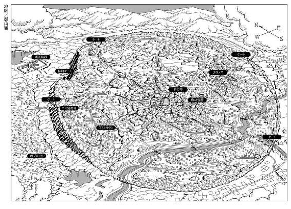

| NO.6 [ナンバーシックス] #08 | |
| あさのあつこ | |
| 講談社 (2013) | |
ＮＯ．６〔ナンバーシックス〕＃８
あさのあつこ

冗談じゃねぇ
くたばってたまるかよ
いっそ宇宙の秩序など目茶目茶に崩れてしまえばいい。──警鐘を鳴らせ！──風よ、吹け！ 破滅よ、来い！
せめて鎧兜に身を固め、討ち死にしよう。
（マクベス 第五幕 第五場 松岡和子 訳 ちくま文庫）
好きよ、紫苑。誰より、あなたのことが好き。
透明な円柱の中に脳が浮かんでいる。
人間の脳だ。
幾つある？ 十、二十、三十......五十は超えているだろう。柱の底面に光源があるらしく、柱全体が淡く白く発光して見える。
一度として眼にしたことのない光景。整然としていて無機質で清潔だ。床は滑らかで染み一つなかった。無臭であり、ほとんど無音のようでもあった。それが、たまらなくおぞましい。今まで見てきたどんな光景、風景よりもおぞましく感じる。泣き叫ぶ声も悲鳴も呻きも聞こえない。屍体も流れる血も苦悶に歪んだ顔もない。それなのに、あの地下で、確かにこの両眼に焼き付けた地獄絵図よりもなお、禍々しいではないか。
おぞましく、禍々しい景色の中に沙布が立っている。
「沙布......」
紫苑は駆け出そうとしてよろめき、膝をついた。脚に力が入らない。心臓が激しく鼓動を刻む。傷付き、血を流し、疲弊しきった肉体が悲鳴をあげていた。
もうこれ以上は進めない。
顔を上げる。汗が一筋、頰を伝い、口に染みてきた。
沙布は無言のままで立っていた。紫苑を見つめている。少しも変わっていなかった。髪の長さも、体形も、真っ直ぐに見つめてくる眼差しも何一つ、変わっていない。
ＮＯ．６、ロストタウン。その駅の構内で慌ただしい別れをした。あのときのままの沙布が目の前にいる。
やつれてはいなかった。どこかに傷を負っている様子もない。
「沙布......無事だったんだ」
無事だった。無事だった。無事でいてくれた。生きていてくれた。生きて再び出逢うことができた。
好きよ、紫苑。誰より、あなたのことが好き。
ＩＤカードから流れてきた告白。最先端の通信機器が伝えてきた、生身の人間の心。
あの声がよみがえってくる。
「紫苑、来てくれたのね」
沙布の声だった。少女にしては少し低く、いつも凜と張りつめている。懐かしい。
胸を揺すられる。心を絞られる。
あぁ懐かしい。
沙布、おれたち、ずいぶん遠く隔たっていたんだな。一世紀も逢わなかった気さえする。
「信じていたわ。きっと、来てくれると信じていた......」
沙布が微笑む。微笑んだ顔がくしゃりと歪み、泣き笑いの表情に変わる。
「待っていたの、ずっと。わたし、待つことしかできなかった。ここであなたを待つことしかできなくて......」
「うん」
紫苑は上半身を起こし、深く息をついた。
「もっと早く来なくちゃいけなかった......ごめんよ、沙布」
沙布はかぶりを振り、首を傾げる。瞬きした眸に微かな戸惑いが過ぎていく。
「紫苑、あなた、髪の毛が......」
「え？ あ......この髪か。いろんなことがあって......また、ゆっくりと全てを話す」
きみと離れていた時間にぼくが経験した全てのことを話す。きみに聞かせたい、聞いてもらいたいことがたくさんあるんだ。一晩じゃとても語りつくせないほど、たくさんある。
「わたしには想像もできないほどたいへんな......たいへんなことを経てきたのね。ここまで来ることだって並大抵じゃなかったでしょ。それでも、あなたは来てくれた。わたしは......それで、もう十分。ありがとう、紫苑。ほんとうにありがとう」
「まるで遺言だな」
紫苑の傍らに立ったまま、ネズミが呟いた。冷たくはない。感情のこもらない平坦な声音だった。
小さな呟きに反応して、沙布の眸がゆっくりと動き、ネズミに向けられる。
「あなたが、ネズミ......」
「ああ」
「初めまして。一目、あなたに会いたかった。どんな人なのか知りたいって、ずっと思っていたわ」
「ご覧のとおりさ。普段はもっと見端はいい。ご婦人に見せられる形じゃないが、残念ながら顔を洗う時間も一張羅に着替える暇もなかったもので、ご容赦を」
ネズミもまた沙布に視線を留めたままだった。瞬きもせず、見つめている。
「沙布、あんたに聞きたいことがある」
「......ええ」
「メインコンピューターを操作して、おれたちをここに導いたのはあんたか？」
沙布からの返答はなかった。束の間、無言の時間が流れる。紫苑は膝をついた体勢のままネズミを見上げた。
沙布がこの施設のコンピューターを操作した？ まさか、そんなことができるわけがない。
口の先まででかかった言葉を飲み込む。
有り得ない。しかし、それしか考えられなかった。
ネズミの灰色の眸が僅かに横に動いた。
「そうだ。それしか考えられない」
紫苑の胸の内をなぞるような一言の後、ネズミはやはり感情のこもらない口調で続けた。
「あんた言ったじゃないか。誰かが呼んでいるって。その誰かのおかげで、おれたちはここに来ることができた。まぁ、来られて有頂天になるほど楽しい場所じゃないけどな。それはそれとして、矯正施設の内部で、おれたちに迎えの使者をよこすなんて奇特な相手は、彼女しか考えられないだろうが」
そうだと頷くしかなかった。紫苑自身、ずっと沙布の呼び声を感じていた。その声に促され、導かれ進んできたはずだ。
だけど、そうだとしたら沙布はコンピューターシステムの中枢に関与していることになる。
どうやって？ どんな方法でそんなことが可能になる？
「紫苑」
ネズミは唇だけを動かし、紫苑の名を呼んだ。
「いつまで、座り込んでいるつもりだ。いくら待っても、コーヒーは出てこないと思うぜ」
「あ......」
そうだ、何をしている。ここまで来て、しゃがみこんでいてどうするんだ。
脚に力をこめ、立ち上がる。足元がふらついた。かろうじて踏みとどまる。ネズミは手を差し伸べようとはしなかった。紫苑も傍らに立つ身体に縋る気はなかった。
傷付いているのも、消耗しているのも、流した血の量も同じ......いや、ネズミのほうがずっと過酷であったはずだ。
縋ってはいられない。ネズミに寄りかかり、かろうじて立てたとしても、次の一歩を踏み出すことは困難だろう。自分の力で立てば、自分の力で進むことができる。
沙布が見つめている。両の指を強く組み、祈るような姿勢のまま、じっと佇んでいる。
「わたしじゃないわ」
ぽつりと沙布の答えが返ってきた。
「わたしにはそんな力なんてない」
ネズミの眉が微かだが顰められた。
「わたしはただ念じただけ......、紫苑に会いたいと、そう想い続けただけ」
「じゃあ、誰だ。誰がおれたちをここに招いたんだ」
「エリウリアス」
「エリウリアス！」
ネズミと紫苑は同時に叫んでいた。
エリウリアス。
その名を老から聞いた。地下世界で生き長らえてきた老人。ＮＯ．６という都市国家の建設に関わり、寄生バチの最初の犠牲者として両脚をうしなった男。そして母、火藍の旧い知己。
老が言った。
エリウリアス、偉大な王だった。いや、今でもそうなのだろう。今もまだ、彼女は君臨している。
今もまだ、彼女は君臨している。
ズボンのポケットに手をやる。そこに老から託されたチップが入っていた。沙布を無事、矯正施設から救い出すことができたら、じっくり解読したい。ここには謎に対する解答がある。ＮＯ．６にまつわる謎。地下世界にまつわる謎。何よりネズミにまつわる謎。その答えが存在している。エリウリアスという女王についても、かなりの情報が入力されているはずだ。
そう思い、微かに心が逸りもした。しかし、矯正施設に一歩、足を踏み入れたときからチップのことなどきれいに忘れ去っていた。ちらりと思い出しさえしなかった。そんな余裕がなかったのだ。肉体も精神も限界ぎりぎりのところで動いていた。一歩の違いで、一瞬の判断で生と死とが入れ替わる。次の一秒を生き延びる、生き延びて前進する。それだけを考えていた。
エリウリアス。
まさか、その名を沙布の口から聞くなんて。
「あんたは、エリウリアスを知っているのか」
ネズミの口調が初めて乱れた。僅かな戸惑いが表れる。
「知らない。でも......彼女があなたたちを導いてくれた。わたしを完全に目覚めさせてくれたの......わたしに真実を教えてくれた」
「真実」
ネズミは、その一言を検証するように繰り返した。
「真実か......。沙布、エリウリアスとやらがおれたちをここまで誘った理由は何だ」
「わからない」
「エリウリアスは、どこにいる」
「わからない......でも」
「でも？」
「たぶん、すぐ近くに......彼女はいるはず。そんな気がする」
「それは、あんたの単なる勘なのか、それとも」
沙布が身じろぎする。
「質問攻めなのね。ネズミ」
「攻めなければ答えは手に入らないだろう。おれたちは、のんびり世間話をするために来たわけじゃない。知らなければならないこと、知るべきことは山ほどある。あんたがそれに手っ取り早く答えてくれるんなら、一番、効率的だ。そうは思わないか、沙布」
「そうね。だけど、あなたの知りたいことの半分もわたしは答えられないわ。容易く手に入るような答えをあなたは......あなたたちは求めてはいないでしょう」
「欲しいなら自分で探し出せ、か」
ネズミが息を吐き出す。
「要するに、あんたは何も知らないってわけだ」
「あなたに関しては何も知らないわ、ネズミ。でも、紫苑のことなら......わかる」
沙布もまた、吐息をもらす。
「わたしが望んだからよ。わたしが紫苑に逢いたいと強く望んだ。エリウリアスは、その願いを聞き届けてくれた。彼女は言ったの」
沙布の唇が震える。
「あなたの望みを叶えてあげる。あなたの一番、逢いたい人に逢わせてあげる......そう言ったの。そして、約束を違えなかった」
「エリウリアスはコンピューターシステムを自由に操れるのか」
「わからない。彼女が何者なのか、どこにいるのか、なぜ、ふいにわたしに語りかけてきたのか......わたしには何も......はっきりとはわからない」
「語りかけてきた？ あんたにか？ あんたの傍で？」
いいえと沙布が否む。
いいえ、違うわ。
「彼女は......わたしの中に語りかけてきた。眠りかけたわたしに、直接、呼びかけてきたの」
「ちょっと待て、それはどういう意味で」
「もういい」
紫苑はネズミの腕を摑んだ。ネズミは紫苑の指から顔へと緩慢に視線を移していく。
「もういい、そこまでだ、ネズミ。ぼくたちがここにいるのは世間話をするためでも、沙布に尋問するためでもない」
ここまで来た。次はここから脱出する。
ここまでは二人、ここからは三人。
ネズミが紫苑を見つめたまま、瞬きをする。
「『ご退出の順番などにおかまいなく。すぐにお帰りください』か。宴に集った諸侯なみにあっさり帰れるといいがな」
「きみにしては弱気だな」
「慎重なのさ。おれには、天然の気はないからな。おれたちがこの最上部にいることはとっくにばれているはずだ。今頃、階下からわんさか怖いおっさんたちが駆けつけてるかもしれないぜ」
「ネズミ、ここに通じる経路は一つしかない。ぼくたちが乗ってきたあのエレベーターだ。あれが作動しない限り、誰もここには来られない。そして、この建物の設備は全てコンピューターシステムに組み込まれている」
「そのシステムが、いつまでもおれたちの味方だって保証があるのか？ いつ、どこでどう状況が変わるか、あんたに見えているのか」
「それは......」
返答に詰まる。
「エリウリアスってやつが何者なのか、おれたちにはさっぱり摑めてないんだ。それを忘れるな。正体の摑めない相手を簡単に信用するもんじゃない」
ネズミの言うとおりだ。紫苑もネズミもエリウリアスについて何一つ確かな情報を手にしていない。とても曖昧な形で老から伝えられ、沙布から聞いたにすぎない。
曖昧なものに縋ってはいけない。都合よく解釈してはいけない。他者を信じるには覚悟がいる。覚悟のない信頼はがらんどうだ。甘えという張りぼての上に薄紙を張っただけの贋物だ。そして、一分の甘さが、甘えが命取りになる。
「沙布」
紫苑は目の前の少女に語りかけた。
「ぼくたちをメインコンピューター......マザーコンピューターと呼ばれているのかもしれない。システムの中枢部、そこに案内してくれないか」
沙布がうなずいた。躊躇も戸惑いも思案の時間もなかった。
「ついてきて」
背を向け、歩き出す。
「行こう」
紫苑が促すと、ネズミは微かな躊躇いをのぞかせた。
「信用できるか？」
「沙布のことか？」
「そうだ。のこのこと彼女の後からついていって大丈夫か。つまり彼女がおれたちを裏切らないと断言できるのか」
「できる」
「言い切れるわけだ」
ネズミの口元に冷笑が浮かんだ。他者を信用できると言い切ること。ネズミにとってそれは美徳ではなく愚行に近い。
「ネズミ、ぼくには何があっても百パーセント信頼できる相手が三人いる。沙布と母さんときみだ」
何があっても信じられる。信じられることがぼくを支えてきた。甘いとは思わなかった。安易な上辺だけの信頼は時に人を窮地に追い込む。しかし、本気で信じられる相手を持たぬ者は脆い。脆弱な砂上の足場しか持ち得ない。
何があっても信じられる。信じぬくことができる。それは強靱な力に他ならない。
「もし......もし、この三人の誰かに裏切られるのなら、ぼくはその裏切りを甘受する。それで命を失うことになっても、おそらく悔いはしないだろう。沙布や母さんやきみを疑ったそのときが、信じられなくなったそのときが、ぼくにとっての破滅だ」
ネズミの口元から笑みが消えた。眼の色が深くなる。それは、ネズミを真理を求め果てなく思索する者のようにも、途方に暮れて佇む迷い人のようにも見せていた。
「紫苑、あんた感じないのか？」
「感じる？ 何を？」
「違和感」
「違和感って......何に対してだ？」
ネズミは無言のまま、沙布の背中を見ている。
「まあいい、あんたの思うようにするさ。どうやら、おれには、あんたについて行くしか道はないみたいだからな。いまさらだが、腹をくくらなきゃどうしようもない」
「それはぼくを信じているって意味か」
「調子にのるな、バカ」
一言吐き捨て、ネズミが歩き出す。脚に銃創があるようには見えなかった。紫苑は引きずってしまう。傷を負った脚が重い。自分のものではないようだ。
透明な円柱の間を沙布に案内されるまま、奥へと進んでいく。ほどなく壁に突き当たった。床と同じやや黄味を帯びた白色をしている。沙布が立つと、音もなく左右に開いた。
「宮殿の奥の間ってわけか」
ネズミが唇を舐める。
紫苑は目を見開き、ほとんど無意識に息を詰めていた。
白く明るい部屋だった。さして広くはない。ＮＯ．６の平均的家屋、そのリビングほどだろうか。煌々と明かりがともり、窓も家具も一切ない室内を隈なく照らしていた。
その中央を円柱が貫いている。今しがた眼にしていたものより一回り太い。ただ、そこに浮かんでいるのは脳ではなく淡い銀色の球体だった。無数の小さな突起に覆われ、その突起の先が数秒に一度点滅している。あるものは青く、あるものは紅く、あるものは臙脂に発光しているのだ。透明な細いチューブが数個の突起の根本から生え、絡まりあって上へと伸びている。その先は暗く、はっきりと見通せなかった。
「これがマザーよ」
「これがマザーか」
沙布と紫苑の声が重なる。
「『月の雫』にも同型のものがあるわ。そちらはグランドマザー、グランマと呼ばれている。もともと『月の雫』に設置されていた研究機関が独立し矯正施設に移ってきた。それは、グランマより小型でありながら同等の性能を有するマザーが完成したから。それが理由の一つ」
「矯正施設内なら研究に必要なモルモットが簡単に手に入る。人間という名のモルモットがな。二つ目の理由はそんなところか」
ネズミがふっと息を吐く。
「逆に言えば、大量のモルモットが必要な事態になったわけだ。さすがにＮＯ．６の内部でモルモット用の人間を大量に調達するわけにはいかない。外部から運び込むのも数が多いだけに厄介だ。その点、ここ、矯正施設ならほとんど問題はない。なにしろ、西ブロックには人が溢れている。それまで人口調節のために行っていた『人狩り』の目的をモルモットの確保のためと変換すればいいだけのこと。祖母さんでも母親でもいいけれど、コンピューター云々というより、案外そこらあたりの理由でのお引っ越しじゃないのか」
「そうかもしれない」
沙布がたまゆら眼を閉じる。血の気のない顔から黒い眸が消えると、少女は一体の人形のように見えた。
「矯正施設は昔から......人体実験の場所でもあった。ここで生身の人間を使ったさまざまな実験が繰り返されていたのよ。それによって、ＮＯ．６の医療技術は飛躍的な発展を遂げた......。その恩恵をわたしも、紫苑、あなたもたっぷりと受けていたわけ......」
「ああ......だな」
紫苑はネズミに向き直り、問いかけた。自分のものとは思えない掠れた聞き苦しい声だった。
「ネズミ、あの部屋......地下室から通路で繫がっていたあの部屋は......」
エレベーターという名の死刑台の底が開き、人々は絶叫とともに叩きつけられた。地獄絵図の最初の一ページとなった地下室、そこから伸びた細い通路の先にはほとんど真四角に見える部屋があった。ネズミが「かりそめの休息地」と呼んだ場所だ。
「そうさ。やっと気がついたか。地下室からあの部屋に至る構造は、モルモットを選別するためのものだ。あの部屋に到達できた者は、エレベーターからの落下による衝撃を耐え抜き、点滅する明かりを頼りに自力で逃げ延びることができた者、並でない体力と精神力、それにそこそこの知力を備えた優れたモルモットたちだ。どうせ使うなら、より丈夫なより屈強なものを。やつらはそう考えたわけさ」
沙布が小さく呻いた。
紫苑の脳裏に男の目が浮かぶ。名前も生い立ちも知らない男の目だ。死に切れずもがいていた男の、苦痛の中で紫苑に縋ってきた男の目がよみがえる。
男を救ったのはネズミだ。安らかな死を男に与えた。それは救済ではなく殺人なのだと、ネズミは言った。紫苑には分からない。あの時も今も、答えをつかみあぐねている。
紫苑が確実に答えられるのは、あの男が実験用のモルモットではなく生身の人間だということ、それだけだった。
「あの部屋にドアがついていたのを覚えているか」
ネズミが問うてきた。覚えている。淡くはあったけれど部屋には明かりが点っていた。闇に慣れた眼に染み入った光だった。その明かりの下に灰色のドアが見えた。覚えている。
「あれは生き残った者たちを回収するためのドアだ。しかし、矯正施設の内部には通じていない。まだ、研究機関の主要部が『月の雫』にあったころの名残だ。あのドアから一旦、外に出され、囚人のように識別チップを埋め込まれ『月の雫』、市庁へと送られる。チップは万が一、逃走したときの用心のためだ。研究機関を矯正施設内に設置したことで、そういう手間を全てはぶける。実に効率的じゃないか」
「識別チップ......」
頭の中で閃くものがあった。
「ネズミ、四年前、きみはあのドアから外へ出たのか。そして『月の雫』へ搬送される途中で脱走した」
「四年前ね......大荒れの日だったな。おれが暴風雨の最中、窓を大きく開け放すような変人に出逢った記念日でもある。しかし、今は思い出話に花を咲かせているときじゃない。沙布、あんたは矯正施設の、いやＮＯ．６そのものの真実を知っている。それを教えたのがエリウリアスなんだな」
「そうよ。彼女がわたしに教えてくれた。聖都市、理想郷とまで称えられたＮＯ．６の真実を......でも、紫苑、あなたはただ教えられただけじゃなく、自分の目で見たのね。自分の耳で聞いた」
「......ほんの一部だけどな」
ほんの一部だ。まだ、知らないことが、気づかないことが、考えねばならぬことが、思わねばならぬことが山ほどある。
紫苑は息を吸い込む。胸の奥に微かな痛みがあった。生身の痛みではない。思考の奥にいつの間にか生まれた微痛だ。ＮＯ．６を思うたびに疼く。
ＮＯ．６は理想郷などではない。無慈悲で非情な都市国家だ。その繁栄と安寧のためなら、どのような残虐も厭わない。しかし、しかし、しかし......。紫苑はもう一度息を吸い、胸の上を押さえる。
ＮＯ．６とは何だ。人の創り上げた国ではないのか。
これだけは信じてほしい。我々はここに理想の都市を築こうとしたのだ。戦争とも貧困とも無縁の楽園を。どこで違えてしまったのか。
老の言葉だった。噓ではあるまい。ＮＯ．６は揺籃期において、確かに人の理念と志を基としていたのだ。
全ての人々の幸福のために戦いのない世を。
どこで違えてしまったのか。
か細く震えた老の言葉が紫苑の胸に刻印のように残った。
人はどこで違えるのだ。どこで理想ではなく欲望に従うようになる。それとも、人の理想そのものが容易く欲望に変じる性質を持つのか。だとしたら、これから先も同じことが起こる。たとえ、このＮＯ．６が滅んだとしても、第二、第三の聖都市が生まれてくる。
どこで違えてしまったのか。
人は違えず国という形を創っていくことができるのか。
紫苑はかぶりを振った。今は己の問いかけに揺らいでいるときではない。逃げはしない。近い未来に必ず本気で向かい合う。だが、今は目の前の壁を突破すること、その一点に集中するのだ。
マザーに近づいてみる。
円柱の前に操作盤らしいプラスチック製の薄板が取り付けてある。縦に七、横に十四のキーが組み込まれていた。ただ白いだけのキーだ。数字も文字も記号も何一つ記されていない。試しにキーの一つに触れてみたけれど、反応はなかった。思いつくままに操作盤の上に指を走らせる。
「どうだ？」
ネズミが紫苑の手元を覗き込んでくる。
「何とかなりそうか」
「だめだ」
「あっさり諦めるな。あんたの頭と腕があれば、お祖母ちゃんだろうがママだろうが手懐けるのは難しくないだろうが。そういう意味じゃ、あんたはなかなかの女たらしのはずだ」
「かいかぶりだ、ネズミ。正直、まるで歯がたたない。たらしこむどころか、最初から肘鉄をくわされて、相手にもしてもらえないみたいだ」
ネズミの眼が細められ、眸の中に濃灰色の光が凝縮する。
「あんたはマザーのお気に召さなかったってわけか......紫苑、本当に無理なのか」
「無理だ。特別な認証方法があるみたいで、それをクリアーしない限りマザーには近づけない。残念だが......ぼくには、手の出しようがない」
「厳しいママだな。ため息が出る」
ネズミはため息のかわりに、小さく舌を鳴らした。
「沙布。きみはどうだ？」
「無理よ、紫苑。たった一人を除いて、マザーには誰も近づけない」
「たった一人......それは、市長のことか？」
「いいえ。彼には役職はないわ。この研究機関を作り上げ、統べる人物......自分のことを真の意味でのＮＯ．６の支配者だと想っている男......。マザーもまた彼の作品よ。だから彼にしか従わない。そういうふうに作られているの」
「エリウリアスって女はどうなんだ？ そいつなら、マザーを好きに扱えるんじゃないのか。だからこそ、遮断壁の開閉もエレベーターの操作もコントロールできた。そういうことだろう？」
ネズミと目を見合わせる。
そうだ、エリウリアス。彼女なら......。
「沙布、エリウリアスは今でもきみに語りかけてくるのか。きみから彼女に話しかけることはできるのか」
沙布に一歩、近づく。
沙布が一歩、後ずさりする。
そのときになって、紫苑はやっとネズミの言った『違和感』に気づいた。
なぜ近寄ってこない？
沙布は一定の距離を保ったまま、それを決して縮めようとはしないのだ。
「沙布？」
「こないで」
ほとんど悲鳴に近い声が沙布の口から漏れる。身を竦ませる少女を見つめ、紫苑は動悸を覚えていた。心が激しくざわめく。
なぜ？
「なぜ逃げるんだ、沙布」
「近寄らないで、お願い。紫苑......」
ふいに沙布の頰に涙が流れる。
「待っていたのに......ずっと待っていたのに、あなたに逢いたくて、逢いたくて......ただそれだけを望んでいたのに......」
「逢えたじゃないか。ぼくは今、きみの前にいる。きみをここから救い出すために来た。いっしょに矯正施設から脱出するために来たんだ」
一歩前に出る。手を差し出す。
「沙布、外へ。この建物から外へ出るんだ。いっしょに行こう」
沙布が顎を上げる。震えを必死に堪えようとするのか、唇を嚙み締めている。硬く引き締まった表情のまま、緩慢にかぶりを振る。
拒否の仕草だ。
「なんでだ！ なんで、ぼくたちを拒む！」
押さえようとして押さえられない。昂る感情のままに口調が荒れてしまう。
沙布、きみを抱きしめよう。ぼくの手できみを抱きしめる。永く隔てられていた時間を埋めるために、きみを抱擁したいのだ。やっと、やっと逢えたんじゃないか。きみに話すための、きみに告げるための、きみに詫びるための......あらゆる言葉がぼくの中で渦巻いている。濁流のように、吹き荒ぶ風のように鳴り響いている。
なのに、なぜ、拒む。差し出したこの手から逃れようとするんだ。
「沙布、ぼくは」
腕を摑まれる。
「止めろ」
ネズミの指が腕に深く食い込んでいた。
「止めるんだ。これ以上、近づくな。彼女の言うことを聞くんだ」
「ネズミ、きみまで」
紫苑の腕を摑んだまま、ネズミが無言で見つめてくる。その眼差しが紫苑に口をつぐませた。
口をつぐみ、紫苑は言葉を飲み込む。声にならなかった言葉は濁流となり疾風となりさらに心をざわめかせる。不安と戸惑いに気息が乱れる。それは三人で矯正施設から脱出するという行為の、その困難さに喘ぐ思いとはまったく異質の不穏だった。
得体の知れない恐怖に身体が凍て付いていく。
「沙布、あんたの望みは何だ」
ネズミが問いかける。詰め寄る激しさは微塵もなかった。柔らかく深く美しい声だ。
「あんたは、おれたちに何をしてほしい」
沙布の表情がふるりと緩む。
「......わたしの望みを叶えてくれる」
「何なりと」
沙布が微かに息を吸い込んだ。
「マザーの破壊を」
ネズミの指にさらに力が加わる。しかし、次の瞬間、紫苑の腕からするりと離れていった。強く摑まれた感覚だけが残る。
「このコンピューターを破壊しろというわけか」
「ええ」
「そうだな......それができるなら、おれたちにとってもこの上ない結構な話だ。できれば、な」
ネズミは上着のポケットからコイン型の極小爆弾を取り出し、指の間に挟んだ。
「こいつの機能を最大限に上げれば、コンピューターを吹っ飛ばすなんて雑作もないことだ」
「無理だ」
紫苑は円柱に軽く触れてみた。
「コンピューターそのものは脆くても、この円柱が問題だ。特殊プラスチックでできている。ミサイルを撃ち込まれてもびくともしないだろう。強固なカプセルに入ったガラス球みたいなものさ。コイン型爆弾で破壊するのは不可能だ」
「百パーセントか」
「そうだ」
「百パーセントの不可能、ゼロパーセントの可能。それじゃ動きようがないな」
「この柱なら開けることはできるわ」
沙布の一言にネズミの眼差しが張りつめた。
「あんたにマザーへの扉を開けられるのか」
「わたしじゃない」
「エリウリアスか」
「そうよ。彼女ならできる。ここを開けてくれるはずよ」
「そこまでできるなら、マザーそのものを停止させることだって容易いだろう。おれたちに頼るまでもない」
「意志がいる」
「え？」
「人間の意志が必要だと......彼女は言ったわ」
ほんの一秒か二秒、ネズミと紫苑は顔を見合わせた。
「破壊のためには人間の意志がいる」
沙布が繰り返す。御託宣を告げる巫女のようだ。ネズミが身じろぎする。
「それはエリウリアスの言葉か」
「ええ」
「手助けはする。しかし、最後の決断はおまえたちの意志で為すがいい。そう言っているわけだな」
「ええ」
「だけど、それじゃ......」
ネズミが口ごもる。紫苑はうなずいていた。ネズミの言いかねた言葉がくっきりと聞こえた気がする。
エリウリアスは人間じゃないってことか。
そうなのだろう。生身の人間がこれほど完璧なガードシステムを搔い潜って情報経路に侵入できるとは思えない。「彼」を除いては。
エリウリアスは人間ではない。だとしたら、何だ。
神か？ 妖か？ 自然の精霊か？ まさか。
「破壊のためには人間の意志がいる......か」
ネズミが沙布の、いや、エリウリアスの言葉をなぞる。沙布は目を閉じ、呟く。
「意志を持って何かを破壊するのは人間だけ。人間だけができること......だから、マザーを破壊するのは人間にしかできない」
まるで呪文だ。
悪寒がする。
紫苑の知っている沙布ははきはきとした物言いの、現実認識力の高い人間だった。夢や希望を絵空事でなく現実に則して語ることができるし、現実に囚われず夢や希望を抱くことができた。感受性は豊かだったけれど、神経は過敏ではなかった。その精神は直立する若木のようだ。真っ直ぐにしなやかに立っている。
こんなふうに、くぐもった呟きを幾度も口にするような少女ではない。決して、ない。
「わかった。引き受けよう」
ネズミの声が鼓膜に触れた。聞きなれているはずの声が、いつにも増してあざやかに耳朶を打つ。
沙布が目を開ける。
「......叶えてくれるの」
「それが、あんたの望みならな」
「ありがとう。感謝します」
沙布は両手を組み、頭を垂れた。
「礼などいらない。マザーを破壊することは矯正施設の心臓部を撃ち抜くことに等しい。おれにとっては願ってもない機会ってわけさ。やってみるだけの価値はある。......本当にこの柱が開き、束の間でもマザーが剝き出しになるのなら」
ネズミの双眸が煌めく。研ぎ澄まされたナイフの煌めきだ。
唐突に、操作盤に明かりが点った。空に文字が浮かび出る。ネズミが短く口笛を吹いた。操作盤に指を置く。
「ロック解除、ロック解除、ロック解除......ふふ、高慢ちきな女王様から素直なお嬢さまに大変身ってとこだな。これならおれでも楽に扱えるぜ」
紫苑はネズミの指先に目を凝らしていた。いつも、どんなときでもその優雅な動きに見惚れてしまう。あまやかな旋律が奏でられるようにも、陽気なリズムが生まれ出でてくるようにも思えるのだ。
いつも、どんなときでも見惚れてしまう......。だが、今はいつものように心が惹かれない。
ざわめきの音が消えない。ますます強く鳴り響く。
指が静止する。何の予兆もなく円柱の中央に銀色の筋が現れた。一本、二本、三本、四本。銀の筋は組み合わさり、縦長の四角形となる。
「扉だ。後は『開けゴマ』と唱えるだけでいい」
さすがに緊張しているのか、ネズミの声音は低く、どこか重たげでさえあった。
「待て」
手首を摑む。手のひらに体温と脈動が伝わってきた。
「ちょっと待ってくれ」
ネズミの眼に影がよぎる。一息分の沈黙。
「紫苑、おれたちにぐずぐず躊躇っている余裕はないんだ」
「わかってる。だけど、待ってくれ......沙布」
沙布はうつむいたままだった。黒いセーターの肩が震えている。
「沙布、きみはまだ、ぼくの問いに答えていない。なぜ、ぼくたちを拒む。なぜ、それ以上近づいてこないんだ」
「紫苑......」
「それに、そのセーター......きみのお祖母さんの手編みの物だろ。ぼくがそれを見たのはずいぶん昔のことだ。まだ、十歳にもなっていなかったかもしれない」
「そうね」
ふいに沙布が微笑んだ。
「あなたから声をかけてくれたの。すごく似合ってるって。嬉しかった......とても嬉しかった。他の人はみんな手編みのセーターを嘲笑っていたわ。毛糸のセーターなんて博物館でしかお目にかかれないよって。あなたは笑わなかった。あなたは......あなただけは、自分の思いや感情に、そして他者に誠実だった。紫苑、あの味気ない......寂寞さえ感じるようなエリート教育の場で、あなたに出逢えた。それは、とても」
「止めろ！」
沙布の言葉を遮る。
「なんで思い出話なんかする。そんなものを聞きたいんじゃない。ぼくが言いたいのは、十歳のときのセーターをなぜ、今のきみが着られるんだって......そういうことだ。あれから背が伸び、体形だって変わった。着られるわけがないんだ。それとも、あれにそっくりの新しいセーターなのか。だけど」
「覚えておいてほしかったのよ」
今度は沙布が紫苑を遮る。
「あなたに、わたしを覚えておいてほしかったの。あなたが似合うって言ってくれたから......そのセーターを着たわたしを覚えていてもらいたい......」
「覚えておく？ きみを思い出にしろと？ 沙布、何を言っているんだ。きみは、ぼくたちと一緒にこないつもりなのか」
「紫苑、そこまでにしておけ」
ネズミが再び腕を摑んでくる。今度は、摑んだままその腕を強く引っ張った。紫苑がよろけるほどの力だった。
紫苑はよろけ、ネズミに身体をぶつける。ネズミは微動だにしなかった。
「もういい。そこまでだ」
「そこまで？ 何がそこまでなんだ」
「自分の不安をごまかすために、彼女を追い詰めるな。それは卑怯な行為だ」
汗が滲んだ。ネズミの視線が突き刺さってくる。
「ぼくが......卑怯......」
「紫苑、わかっているんだろう。あんたが気づかないわけがないよな。だとしたら......あんたの気がついた事実から目を逸らすな。目を逸らして逃げたって、何も解決しない。何にも変わらないし、元にも戻らないんだ」
何も解決しない。何も変わらない。もう、元へは戻らない。
息がうまく吸えない。汗が目に染みる。
「紫苑、逃げるな。少なくとも、今は......今は逃げてはだめだ」
瞬きする。ネズミの視線を受け止める。首を回し、沙布を見やる。
「......あれは実体じゃないと......幻だと」
「マザーがおれたちに見せている仮想現実だ。あんたの親友は現実にはいない」
ゲンジツニハイナイ。
なんだそれは？ 何を意味する言葉だ？
紫苑は叫びそうになっていた。身体の芯から恐怖が噴き上がってくる。沙布は伸ばした腕の中に飛び込んでこなかった。紫苑の指先に触れようとさえしなかった。
触れられなかったのだ。抱くことも抱かれることもできなかった。
ゲンジツニハイナイ。
ジッタイノナイ、
マボロシ。 実体のない幻。
ネズミの口調がほんの僅かだが急いてくる。
「罠じゃないかと、最初は疑った。けれど、いまさらおれたちを罠にかけてどうするんだと思い直した。殺すんだったら、その機会は百も千もあったんだからな。おれたちを生かしてここに呼んだからには、それだけのわけがあるんだ。マザーが沙布の姿を借りてまで、何かをおれたちに伝えようとしている......おれはそう考えていた。まさか、マザー自体の破壊を依頼されるなんて思ってもいなかったけどな」
「マザー......」
突起物に覆われた球体に目をやる。
「マザーじゃない」
首を振っていた。ネズミの指が緩む。
「マザーの作り出したバーチャルなら今の沙布を忠実に再現するはずだ。沙布の記憶の中から、わざわざ黒いセーターを拾い出したりはしない。コンピューターに感情はない。だけど、沙布は自分の思いから、あのセーターを選んだ。マザーじゃない......、ネズミ、ぼくたちに沙布を見せているのはマザーじゃなく......沙布自身だ」
「沙布がマザーを利用して、自分の姿を映し出しているってことか」
「そうだ......そうだろ、沙布。それとも、これもエリウリアスの仕業なのか」
自分の声じゃないみたいだ。
怯えた野獣が牙を剝き、必死に威嚇の声をあげる。その唸り声みたいだ。歪んで醜く、獰猛なくせに怖じている。
「そう......エリウリアスがわたしを覚醒させてくれた。それまでは夢の中を漂っているようだったの......ゆらゆらと......エリウリアス、彼女がわたしの意識を覚醒させ、わたしに何ができるかを教えたの。わたしは......マザーを支配することはできない。でも、機能の一部を利用することはできる......わたしにできるのは、それだけ」
「きみはどこにいる。現実のきみは今、どこにいるんだ」
「どこにもいないわ」
沙布の声音が強く張りつめた。
「もう、どこにも、わたしはいない」
「ばかな。じゃあ、目の前にいるきみは誰によって作られた。きみ自身じゃないのか」
「いないのよ、紫苑。わたしはもう......」
沙布が一歩、近づいてくる。紫苑も前に出る。腕をまっすぐに差し出す。何も触らなかった。指は確かに沙布の肩に届いているのに、そこには何もない。さっき手のひらに感じた、ネズミの体温と脈動。生きている証の温もりと動きだった。
「あなたに、さよならが言いたかった。ありがとうを伝えたかった。あなたがいたから、わたしは......ずっと幸せでいられたの」
沙布は紫苑を見上げる。挑むような光が眸に宿る。
「あなたを愛していたわ」
「沙布」
「それがわたしの真実よ。あなたがわたしをどう思おうと、いいの。わたしがあなたを愛した。それだけが真実なの」
ああ、沙布だ。紫苑は思った。この真っ直ぐな強さ、飛翔する鳥に似た強靱な美しさ、沙布のものだ。
「あなたに逢わなかったら、わたしは誰かに焦がれることを知らぬままだった。愛する意味を知らないままだった......。知ることができてよかった。生まれてきて、あなたに逢えた......後悔することなんて何一つないわ......ふふ、これは少し強がりかも。強がって虚勢を張るのはきみの悪い癖だって、あなたに言われたことがあったものね」
沙布の指が紫苑の頰に触れた。感触はない。しかし、確かに沙布の指が触れたと感じた。
「紫苑......あなたもそう思うでしょ」
沙布は紫苑の肩越しに、後ろに立つネズミに視線を投げる。
「あなたもわたしと同じように思っているでしょ。知ってよかったって。焦がれることも愛することも知らないまま生きていくなんて、もうできないって」
「......うん」
そうだ、沙布。ぼくは知ってしまった。ＮＯ．６の正体もぼくの中にＮＯ．６が存在することも、知ってしまった。他者に心を揺さぶられることを、他者を求め焦がれることを知ってしまった。もう何も知らなかったころには戻れない。戻りたくない。知らぬまま穏やかに生きていたあのころに、ぼくは決して戻りたくはないのだ。
紫苑は身体の震えを押さえ込むために固くこぶしを握った。そのこぶしまでもが震えてくる。
「戻らなくていい。戻る必要なんてないんだ。沙布、ぼくたちは知ったことから出発すればいい。ここから、今から出発するんだ」
出発なんだ。始まりなんだ。終わりじゃない。そうだろ、沙布。これからいっしょに生きていけるじゃないか。いっしょに......。
マザーから伸びたチューブに目をやる。
あれはどこに繫がっている？
何のためのチューブだ？
「お願い」
ネズミを見つめ沙布が言った。
「マザーを破壊して」
ネズミは沙布の眼差しから逃れようとはしなかった。無言のまま受け止め、首肯する。沙布が安堵の息をはいた。本物の心からの安堵の吐息だった。
「ありがとう。本当に......」
「約束は果たす。それがどんな内容であっても、一度交わした約束は違えない」
「ええ......わかるわ。あなたはそういう人なのね」
ネズミは再び操作盤に向かった。
銀の筋で囲まれた部分が僅かに赤味を帯び、横に滑る。
扉が開いた。
ネズミは、一瞬の躊躇いも無く腕をつっこんだ。操作盤が邪魔をして、身を乗り出せない。僅かにマザーには届かなかった。
「ツキヨ」
超繊維布の間から黒い小ネズミが顔を出す。あたりを見回し、素早くネズミの肩に駆け上った。
「頼むぞ」
ネズミの差し出したコイン型爆弾をツキヨは口にくわえた。
「ネズミ、待て、待ってくれ」
「待てない」
ネズミは言い切った。
「マザーを破壊する。これ以上は待てない」
「だめだ。待ってくれ。待つんだ。あのチューブの先に何があるかを確かめさせてくれ」
「必要ない」
ネズミと視線がぶつかる。
「......きみには、わかっているのか。沙布がどこにいるのか......あの先に何があるのか......」
「あんたにだって、わかってるはずだ。あれを見たんだからな」
あれを？
この部屋の外に広がる光景。透明な墓標が立ち並ぶ墓地のようだった。墓標、いや、棺か。一つ一つに、人間の脳を納めた葬送のための器だ。
「行け」
主人の命のままに、ツキヨが走る。ネズミの腕を伝い、マザーへと勢いよく跳んだ。マザーの上に着地する。
「よし、うまいぞ。そのまま、そこに引っ掛けるんだ」
ツキヨの動きは素早く、滑らかだった。突起と突起の間にコイン型爆弾を引っ掛けると顔を上げ、指示を仰ぐようにネズミに向かって鼻先を動かす。
「上出来だ」
ネズミの開いた手のひらにツキヨが飛び移る。そのまま腕を抜くと、マザーの扉は開いたときと同じく、音も無く閉じた。
一連の出来事を紫苑は木偶のように突っ立ったまま眺めていた。
ネズミの視線が紫苑を越えていく。
「完了。制限時間三分。それが時限装置の最長時間だ」
「三分......逃げて、早く」
沙布の口調と眼差しが緊張した。紫苑はネズミから沙布へと目を移す。
「逃げるなら、きみもいっしょだ」
「紫苑、何度同じことを言わせるの。わたしは行けない。あなたとネズミだけで逃げるのよ」
「沙布」
「逃げなさい。一秒も無駄にできない、早く」
学生のころ、月に一度課題研究の発表が義務付けられていた。沙布の発表のとき、同じ研究テーマを選んでいた学生の一部がわざと騒いで邪魔をしたことがある。紫苑が諫めるために立ち上がるより早く、沙布はその学生たちを見据えて鋭く言い放った。
「恥を知りなさい」
騒ぎの中心にいた大柄な少年が立ち上がり、大仰に顔をしかめる。
「恥を知れだって？ おい、おれたちを侮辱するつもりか」
「侮辱する気なんてさらさらないわね。ただ、その内容に拘わらず、他人の研究発表は最後まできちんと聴く。それって、最低限の礼儀じゃなくって。三歳の子どもでもできるわ。あなたはそれができない。恥ずべきことじゃないの」
教室のあちこちから拍手が起こる。少年は唇を嚙み、無言のまま着席した。
やや紅潮した頰、意志を込めた双眸、引き締まった頤の線......あのときと同じ沙布が目の前に立っている。それなのに、触れられない。いっしょに逃げることさえできない。
そんなばかな。
「きみがこの中にいるのなら」
紫苑はこぶしを握り、円柱を力任せに打った。
「ここからきみを連れ出す。いっしょに行くんだ、沙布」
きみがどんな姿になっていようとも。
「やめて！」
沙布が悲鳴をあげる。
「やめて、やめて。それだけは、いや！」
紫苑の視界を遮ろうとするかのように、沙布は両手を広げた。
「それだけは......いや。紫苑、お願い。それだけは......そんな惨いことだけは......しないで」
沙布は本心から怖れていた。言葉からも眼差しからも恐怖が迸る。
「あの姿をあなたに見られるぐらいなら......あなたを望みはしなかった。あなたに逢いたいなんて願わなかったわ」
「沙布、しかし......」
「紫苑、もう一度言うわ。わたしはすでに存在しないの。それなのに、わたしは囚われている。苦しいのよ、とても。こんな、こんな屈辱にわたしは耐えられない。だから、マザーを破壊して。わたしを解き放って」
思考できない。
頭の中に幾つもの白い線が走り、思考回路を切断する。
「来るんだ」
ネズミが腕を引っ張る。
「沙布、ぎりぎりまで逃走経路の確保を頼む」
「ええ」
沙布が走り出す。紫苑にぶつかってくる。反射的に抱きとめようとした。しかし、何の衝撃もないまま、沙布の身体が通り抜けていく。風がそよいだほどの実感もなかった。
わたしは幻よ。ただの幻影にすぎない。
百万の言葉より雄弁に語りかけてくる。
突如、警戒音が鳴り響いた。矯正施設の建物すべてに響き渡る。
緊急事態発生、緊急事態発生。
レベル５。レベル５。
緊急避難、緊急避難。
ネズミに腕を摑まれたまま、沙布を追う。思考の半分が停止し、現実を受け入れることも、的確な判断を下すことも、現状を把握することもできない。
三人で逃げているんだ。ぼくとネズミと沙布と、三人とも生きたまま、生身のまま、再び陽光の下へ立つために走っているんだ。そうだ、そうに違いない。
頭の中で歯車が軋む。妙な金属音をたてながら回り、止まり、逆に動き、再び止まる。
ギリギリギリ、ギリギリギ......。
切断された思考回路がときに繫がり、ときに切り離され、千々に乱れ、固まり、粘りつく。
三人で逃げている。きっと脱出できる。逃げ切れる。ぼくたちは、また、あの懐かしい場所に戻ることができるんだ。
懐かしい、懐かしい、懐かしい、懐かしい......目に焼きつき、心に刻まれた場所。むろん、ＮＯ．６なんかじゃない。あの部屋だ。ぼくを蘇生させ、ぼくを生まれ変わらせてくれた奇跡の場所だ。
沙布をあの部屋に案内したい。ネズミの住み処であるあの部屋に。
沙布、すごい場所なんだ。本の他にはほとんど何もないんだから。椅子はある。それにストーブとベッドと......小ネズミたち。それだけさ。きっと、きみは啞然として、大きく目を見開き、あたりを何度も見回すだろう。手を伸ばし、積み上げられた本にそっと指を置くだろう。それから......それから、どうするだろう。微笑むだろうか。感嘆の声をあげるだろうか。圧倒されてぼんやりと佇んでしまうだろうか。
その時、ぼくはきみに告げる。「ここが出発点だったんだ」と。
あの部屋からぼくは出発した。ネズミに導かれ、無知の枠からそろりと一歩、足を踏み出したのだ。赤子が外界に触れるみたいに、ぼくはぼくの知らなかった世界に踏み出していったんだ。その場所をきみに見せたい。見てもらいたい。
ああ、それから、イヌカシだ。イヌカシを紹介しなきゃ。最高に愉快ですてきなやつなんだから。きみなら、すぐに打ち解けることができる。イヌカシはちゃんと理解できるんだ。人間の本質を嗅ぎ当てることができる。どんなに巧みに装っていても、装いの下にある傲慢や愚劣に気がつく。
「おれは鼻が利くのさ。腐臭には特に、な。それが生肉であろうと、残飯であろうと、人間の心根であろうと、腐った臭いはすぐに嗅ぎ当てちまう。ごまかしなんてできやしねえぜ」
言われたことがある。その通りなんだ。イヌカシは何でも嗅ぎ当ててしまう。見事なものだ。だからこそ、きみのことを気に入ると思う。絶対に気に入るさ。鼻の先をひくひく動かして、
「ふーん、紫苑、この女はなかなか新鮮だな。美味そうじゃないか。少なくとも食って食中りする心配はねえよな」
なんてニヤニヤ笑うだろう。口はものすごく悪いけれど、うん、慣れるまでは驚くかもしれないけど、でも、イヌカシは決して噓をつかない。自分の心に背かない。心底から信じられるやつなんだ。きみだったら、すぐに理解できる。
ふふっ、きみの差し出した手を拗ねたみたいな顔つきで、そっと握るイヌカシの姿が浮かんでくるよ。ぼくは、それを笑いをこらえながら見ているんだろうな。
力河さんもいる。こちらはかなりの年配だ。実は、母さんの知り合いだったんだ。びっくりだろう。
力河さんも口は悪い。酒癖も悪い。ものすごい大酒吞みでほぼ一日中吞んでいる。そのことで、いつもネズミやイヌカシにからかわれている。そのからかい方があんまり辛辣なんで、傍にいて気の毒になるぐらいさ。確かに吞みすぎではあるんだけど。でも何ていうんだろう、情があるっていうのかな。力河さんからは力河さん自身の感情が伝わってくるんだ。ＮＯ．６では絶対に存在しないタイプの人だ。そうだろ？ 自分の感情をそのまま発露する者なんて、あの都市にはいない。もっとも、ネズミに言わせると「アルコールで感情の栓がすっかり緩んでしまって、使い物にならなくなってんだ。それで、垂れ流し状態になっているだけさ」ってことらしいけれど......そう、ネズミもイヌカシに負けない毒舌家なんだ。
カランって少女もいる。うん、母さんと同じ名前なんだ。西ブロックで最初にできたぼくの友人だ。まだ、ほんの少女だけれど、強く聡明で誇り高い。絵本が大好きで、ぼくは何冊も読み聞かせをしたよ。絵本を読むなんて本当に久しぶりだった。
そして、何よりネズミのことをきみに話さなきゃいけない。彼のことをきみに知ってもらいたい。四年前の嵐の夜、ぼくは彼に出逢った。そのときから、ぼくはずっと彼に捕らわれていたような気がする。彼といると、ぼくは自分を見失ってしまう。いや、そうじゃない。鮮やかに照らし出されるんだ。その光が眩しくて、一瞬、盲目になるのかもしれない。ぼくの視力はそれほどに脆弱だった。自分も自分の周りの真実も確かに捉えられないほどに脆かった。沙布、ネズミの眼差しや言葉は、ぼくを貫く。ぼくを射る。ぼくを打ちのめし、ぼくを救う。彼によってぼくは溶かされ、打ち直され、新しい命を吹き込まれた。
沙布、沙布、きみはぼくにとってかけがえのない友人だ。誰と比べることもできない大切な友だ。
その一言は残酷か？ きみのぼくへの愛とぼくがきみに抱く想いは、交差することのない平行線だろうか。
なんでそこまで子どもなの。
きみに呆れられたよな。そうだ、本当に我ながら恥ずかしいほどに、ぼくは幼い。自身の感情の抑制が利かないんだ。きみが望むようにきみを愛せたら......、かけがえのない大切なきみを......。
歯車が回る。不快な音をたてながら、軋み続ける。
ギリギリギリ、ギリギリギリ......。
三人で逃げている。きっと脱出できる。
円柱の間をすり抜け走る。ひっそりと静かだ。ネズミと紫苑、ふたりの足音だけが響く。
深紅のドアが開く。無人の廊下が見える。三つのドアはぴたりと閉まり、人の気配はない。
沙布の足が止まる。
「行って、早く」
まっすぐにエレベーターを指差す。
「制限時間ぎりぎりまで作動させる」
「了解」
ネズミが廊下に足を踏み出した。紫苑の腕を摑んだままだ。
「沙布、きみも」
「わたしはここまでよ。紫苑、ありがとう。さようなら。ネズミ、あなたも」
沙布が微笑んだ。
ドアが再び閉まる。
「沙布、待て、沙布」
「紫苑」
肩を摑まれ、無理やり身体の向きをかえられる。腹部にこぶしがめり込んできた。
「ぐっ」自分の低い呻きが聞こえた。身体が沈み、ネズミの腕の中に倒れこんでいく。意識を失いはしなかったが、束の間、四肢が痺れ、自由が利かなくなった。
エレベーターの前まで引きずられていく。ネズミの荒い呼吸と心臓の鼓動が伝わってきた。二人を呼び込むように、エレベーターが開く。ネズミが何か呟いた。聞き取れない。足がもつれ、よろめき、ネズミは紫苑を抱えたまま中に転がり込んだ。
エレベーターが急降下していく。
警戒音はまだ鳴り響いている。
緊急事態発生、緊急事態発生。
レベル５。レベル５。
緊急避難、緊急避難。
総員、速やかに避難せよ。
レベル５。レベル５。
緊急避難、緊急避難。
「......沙布」
床に転がったまま、紫苑は喘ぐ。ネズミもしゃがみこみ、荒い息を繰り返していた。
もう立ち上がれない。
そう思う。
肉体も心も萎えてしまった。萎えているのに重い。とてつもなく重い。髪の先まで鉛を流し込まれたみたいだ。動かせない。
「まだ......音をあげるな」
ネズミの声だ。遥か頭上から発せられている。遠く、遠く、彼方から響いてくるのだ。
ネズミ、ぼくは何のためにここにいる。なぜ、ここに意気地なく倒れこんだまま動けずにいる。沙布はどこだ。なぜ、彼女を置いてきた。教えてくれ。他者に縋るな。答えは自分で摑め。きみは言うだろう。安易に縋りつく者をきみは軽蔑する。ぼくは己の弱さを恥じる。だが、だが、今は答えを教えてくれ。ぼくに正解を与えてくれ。
ぼくは何のためにここにいる。沙布を残したまま、なぜ、ここにいる。教えてくれ、教えてくれ、ネズミ。
きみに縋る。
エレベーターが急停止する。衝撃に身体が突き上げられ、床を転がる。ドアが開きかけたまま動かなくなった。電気が消える。
遠雷が聞こえる。直後に二度目の衝撃が来た。最初のものより、ずっと激しい。
雷？ ちがう、そんなものじゃない。あれは......。
爆発音が耳の中にねじ込まれる。闇が襲い掛かってくる。
耳を押さえ、紫苑は声にならない声をあげた。
エレベーターが閉まる。下降していく。
沙布は佇んだまま、見送った。
満足？
ふいに、柔らかな声が耳奥に響いた。
「エリウリアス、あなたなのね」
視線を巡らせる。むろん、何も見えはしない。
見えないけれど感じる。
沙布、これでよかったの？ あなたは、満足している？
どうだろうと、沙布は首を傾ける。胸に手をやる。ふいに涙が込み上げてきた。
声をあげて泣きたい。
紫苑、紫苑、行ってしまった。
ここまで来てくれた。それで充分だと思っていたはずなのに、この思いはなに？ この情動はなに？
紫苑、紫苑、あなたの傍らにいるのは、なぜ、彼なの。なぜ、わたしじゃないの。あなたと共に生きていくことをわたしはなぜ、許されなかったの。彼がいなければ、あなたはわたしを愛してくれた？
共に生きることはできなくても、共に死ぬことはできたはずよ。
沙布は顔を上げ、胸の上で両手を握り締める。
沙布、あなたはそれを望まなかったの。
わたしは、本当は、本当は......あなたがわたしと死んでくれることを、ここでいっしょに滅んでくれることを望んでいたのかしら......紫苑。
かぶりを振る。望んではいなかった。今もそうだ。僅かも望まない。生きていてほしかった。生きて、この世界を変えてほしい。こんな理不尽な死を蒙る者のいない世界を創り上げてほしい。
紫苑、生きて。あなたの生命を生き切って、どうか。
「エリウリアス、あなたはこれからどうするの」
わたし？ わたしが何をするか......。
「ええ、自由になれたのは、あなたも同じ。あなたは、いったいこれから何をしようというの」
笑い声が響いた。
草原を渡る風音に似ている。
わたしが何をするか。じっくり眺めているといいわ。
沙布は身震いをした。草原の風ではなく、霙交じりの寒風が吹き付けてきたようだ。真冬の到来を告げる冷え切った風が。
沙布、わたしはあなたが好きだったわ。あなたという人間に出会えたことは、もしかしたら......もしかしたら、わたしにとって、とても大きな意味があるのかもしれない。
「どういうこと？」
さあ、どういうことかしらね。ああ、時間だわ。わたしも行かなければ。沙布、さようなら。
「さようなら」
そう、もう時間なんだ。
沙布は目を閉じる。温かな陽射しと木々の匂いを感じる。
口元に微笑を浮かべることができた。
《蜃気楼め、うせやがれ、みせかけの恐怖、うせやがれ、幻影も、うせやがれ！......生命はある！ おれはいま、ちゃんと生きてたじゃないか？（中略）いまこそ理性と光の......意志と力の王国が訪れたんだ......これから見てやろうじゃないか！ これから力くらべしようじゃないか！》
（罪と罰１ ドストエフスキー 亀山郁夫 訳 光文社）
莉莉が眠っている。
店の奥にある古ぼけたソファの上で、小さな寝息をたてている。
まるで胎児のような恰好だ。眉を寄せ口元を結んだ寝顔は安らかとはほど遠い。頰には涙の跡がくっきりとついたままだ。不安なのだろう、火藍がかけてやった毛布を固く抱き込んで身を縮めている。
「莉莉......かわいそうに」
乱れた毛布を直してやる。莉莉の口元が微かに動いた。
「パパ......行かないで」
寝言が漏れる。指が毛布の端を強く握りこんだ。
涙が滲む。火藍は慌てて目頭を押さえた。泣いても何にもならない。涙は何一つ解決してはくれなかった。紫苑がいなくなったとき、源が涸れるほどに泣いたではないか。
泣いて、泣いて、泣いた。流した涙が自分を支えてくれることも確かにある。泣くことで気持ちを切り替え、明日へと踏み出せることもある。そんな経験を何度かしてきた。涙を軽んじたり、恥じたりする気はさらさらない。
でも、今は違うのだ。
わたしは、この小さな少女を守らなければならない。泣いてなんかいられない。
強くならなければ。
火藍は莉莉の髪をそっとなでた。
莉莉をあらゆる災厄から守るのだ。これ以上悲しませない。苦しませない。わたしは紫苑を守れなかった。沙布を守れなかった。だけど、だから、莉莉だけは何としても守り通す。
わたしには何ほどの力も備わっていない。この世界を変える力も、降りかかる災いを祓う力も、大切な者を救い出す力も、持ってはいない。わたしは微力だ。でも、無力じゃない。僅かな、ささやかな力がわたしの中には残っている。その力を使って、精一杯手を広げる。わたしより弱く脆い者のために盾になるのだ。
「パパ......パパ......怖いよ」
莉莉の額にそっとキスをする。
「莉莉、だいじょうぶよ。だいじょうぶ」
ノックの音がした。
店のドアをだれかが遠慮がちに、しかし、急いた調子で叩いている。以前はノックの音を聞くたびに、紫苑が帰ってきたのではと胸が高鳴った。ドアに駆け寄りたい衝動に駆られた。今はドアを打つ音に注意深く耳を傾けられるまでに落ち着いている。
希望を失ったからではない。息子がいつかここに帰ってくるという希望は確かなものとして母の胸の奥に根を張っている。
再会を必ず。
ネズミの伝言だ。あの短い手紙こそが希望だ。そして希望は火藍にゆとりと決意を取り戻させてくれた。冷静であれと諭してくれた。信じるものを与えてくれた。
再会を必ず。
ええ、そうよ。紫苑、必ずあなたは帰ってくるわ。必ずね。
火藍は立ち上がり、足音を忍ばせてドアに近づいた。
「火藍、いないのか。ぼくだ」
どこかに疲労を滲ませた男の声がする。
楊眠だ。莉莉の母、恋香の実の兄になる。莉莉にとってはただ一人の伯父、数少ない身内の一人だった。
「楊眠、待って。今開けるわ」
ブラインドを上げ、ドアの鍵を外す。長身の男がふらりと店内に入ってきた。顔つきは声音以上に疲れ果てている。
「恋香のようすはどう？」
ドアを閉め、椅子に座り込んだ男に尋ねる。恋香は仕事場から帰ってこない夫を案じるあまり、心を乱し興奮状態に陥っていた。
「鎮静剤を飲ませて、やっと眠らせた。泣き喚いて......たいへんだったよ。あいつがあんなに大泣きするなんて思ってもいなかった。普段はもう少し気丈なやつなんだが」
「不安でたまらないのね」
「そうさ。いくら待っても、月薬は帰ってこない。いつも使っているバスにも、次の便にも乗っていなかった。そんなこと結婚してから一度もなかったらしい。あの人の身に何かあったんだって、どうしようって、その一点張りさ。冷静になれっていくら諭しても、まるで耳に入らない様子で......見ていて哀れだった」
「だけど......職場で何かあれば知らせが入るでしょ。それもないってことは......」
楊眠が力なくかぶりを振った。目の下の隈が一際濃くなり、眉間に刻まれた皺が深くなる。
「その職場がわからない。どこに連絡していいのか、問い合わせしていいのか、さっぱりなんだ。月薬は自分の働いている場所を家族にも伏せていた」
「職場を？ 恋香も知らないっていうの？」
「ああ、まったく知らないらしい。結婚したころ、何度か問い詰めたけれど、月薬は答えなかったそうだ。やましいことはやっていない。ただ、上司の命令でしゃべれないんだ。しゃべればクビになってしまう。だから聞かないでくれって。そこまで言われれば、恋香も黙るしかなかったんだとさ。月薬は高額ではないけれど、ロストタウンの住人にしては平均以上の賃金を稼いできて、それを全額、妻に渡していた。そのうち、恋香も夫の職場のことが気にならなくなって、時期がくれば話してくれるだろうぐらいに考えていたそうだ。莉莉がいる。子どもも生まれてくる。生活の安定が一番だと、気にかかりながら目をつぶっていた。その結果が......これさ」
「だけど、家族にも秘密にしなければいけない職場って......」
「どこだと思う？」
楊眠が火藍を見上げる。充血した目の中に一瞬、鋭い光が過った。火藍は唾を飲み下す。
秘密、隠匿、沈黙。
「矯正施設」
その一言を舌に載せたとたん、苦味が口中に広がった。幻覚だとわかっているけれど、震え上がるほどに苦い。
「そう、ぼくもそう思う。そうとしか考えられない。何の証拠もないがな。月薬は矯正施設で働いていた。むろん、そんなに重要なセクションじゃないだろう。末端にいたるまで緘口令をしかなければならない職場......うん、あそこ以外にありえない」
「でも......たとえ、月薬さんが矯正施設で働いていたとしても、毎日、決まった時間に帰宅していたんでしょ」
「そうさ。毎日判で押したように定刻に出かけ、定刻に帰宅していた。それが、今日はいくら待っても帰ってこない。しかも......」
楊眠が言いよどむ。
「何かあったの」
楊眠は胸ポケットから小さな袋を取り出し、中身を手のひらに載せた。火藍は息を吞む。
「まぁ、金貨」
三枚の金貨だった。ロストタウンに住む者にとって、金貨一枚は約半年分の賃金に匹敵する。
金貨三枚。大金だ。
「月薬から渡されたそうだ」
「まぁ、こんな大金をどうやって手に入れたの」
「恋香も同じことを訊いたそうだ。あいつのことだから、訊いたというより、問い詰めたって感じだろう」
「月薬さんはなんて？」
「はっきり答えなかった。怪しい金じゃない。正当な報酬だと繰り返しただけで。結局うやむやにしてしまった。ただ......その後、これだけあれば当分の生活には困らないなと呟いたのが聞こえたそうだ。恋香は、あれは自分がいなくなっても大丈夫だという意味だったんだって言い張るんだが......まんざら妄想じゃないと、ぼくも思うんだが」
「月薬さんは自分の身に何か起こるかもしれないって......予感みたいなものがあったのかしら」
「そうだな。恋香が言うにはこの一日、二日、様子がおかしかったそうだ。何かに怯えているようで、迷っているようで、特に昨日はぼんやりしていて呼んでも返事をしないことがたびたびあったらしい」
「莉莉も、それは感じていたみたい。月薬さんのこと、とても心配していたもの」
語尾が震えてしまう。動悸がする。
出所のわからない大金、不帰を予言するような呟き、不可解な夫の態度、どれからも破滅の匂いが立ち上ってくる。恋香が不安にいたたまれず、取り乱すのも頷けるではないか。まして、恋香は前夫の唐突な、不可思議な死に様を経験しているのだ。
また同じことが起こる。
そう思えば恐怖も不安もさらに膨れ上がる。月薬との家庭は、幼い娘と二人必死に生きてきた恋香がやっと手に入れたささやかな楽園なのだ。再び取り上げられるなんて、失うなんて酷すぎる。
ふいに楊眠が立ち上がった。狭い店内を歩き回る。足音が響く。
「繫がっているんだろうか」
足音に邪魔され、呟きに近い小声が聞き取れない。
「え？ 何て？」
楊眠の足がぴたりと止まった。身体の向きをかえ、火藍の前に立つ。表情は強張っているけれど、興奮の証なのか頰には血の色が浮き出ていた。
「月薬の異変とＮＯ．６の異変は繫がってるんだろうか。どう思う、火藍？」
「まさか、そんなことあるわけが」
「ないと思うか？」
楊眠の両眼が熱を帯びているかのように鈍く光る。僅か数分で人相が変わった。それとも、楊眠という男が隠し持っていた面相が、今、露出したのだろうか。
「月薬は個人的な事情で帰れないんじゃない。そうだとしたら、あいつのことだ、必ず家族に何らかの連絡をしてくるはずだ。あいつは今、連絡したくてもできない状況にある。一切の連絡を禁じられているのかもしれない」
「それって、どこかに拘束されてるってこと？」
「うん。しかし、拘束されたらされたで、家族に治安局からの連絡は入るはずだ。少なくても今まではそうだった。それも一切無い。あいつの職場が矯正施設だとしたら......何かそこで異変があったんだと、そんなふうに考えられないかな」
矯正施設。
沙布が連れ去られた場所のはずだ。そして、おそらく紫苑もそこにいる。
「矯正施設だけじゃない......なあ、火藍。今、この都市、ＮＯ．６が大きく揺れ動いている。それはきみも感じるよな」
「ええ......」
楊眠が再び歩き始める。コツコツコツ、足音がさっきより、ずっと高く忙しく響いている。
「聖都市の市民がばたばたと死んでいる。当局は何の手もうとうとしない。いや、うちようがないんだ。どうしたらいいのか、誰もわからない。こんなこと初めてだろう。人の考えられる最高の理想都市、聖なる都とまで称されてきたＮＯ．６が瓦解しようとしているんだ。明日にも崩れ去るかもしれない」
「楊眠、それは早計に過ぎるわ。いくら、何でも」
「いや、ぼくにはわかる」
強い口調で火藍を遮った楊眠の口元に、笑みが浮かんだ。
「この都市には今まで誰も経験したことのない恐怖が渦巻いている。命を危険にさらされる恐怖だ。それは、直に市当局への不満に変わる。いや、もうすでに不満は膨れ上がり破裂する一歩手前まできているんだ。従うことに慣れ、押し付けられた紛い物の繁栄を享受してきた市民たちがやっと目覚めたってわけだ。目が覚めて、自分たちがどのくらい理不尽な不自由な世界に生きていたか理解したんだ。そうだ、そうだ、やっと覚醒した。そして、慌てに慌てているってわけさ。まったく、なんでもう少し早く目覚めようとしなかったんだ。誰も彼も真実を見ようとしなかったんだ」
「楊眠......」
火藍は一歩分、後ずさりした。
楊眠は火藍の戸惑いにまったく気がつかない。月薬のことも、たった一人の妹、恋香のことさえも忘れ去っているように見える。月薬、恋香、莉莉、そして火藍。渦巻く感情や思いに突き動かされ、自分の周りにいる一人一人に心を馳せられない。
こんな眼をした者たちを知っている。
昔、昔、火藍が若かったころのことだ。まだＮＯ．６は輪郭さえできていなかった。
彼らは自分の言葉や理想に浮かされて、眼差しを熱くし声音を火照らせていた。眩しくはあったけれど、怖くもあった。彼らの熱い眼差しの先に人間はどこにもいなかったのだ。理想は語っても、人間にはまるで無関心だった。自分たちが人間という存在を見据えていないことさえ気がついていなかったのだろう。理想都市の建設を近い未来のこととして論じながら、その思考の中に人間が介在してこないなんて......気味が悪い。
火藍は徐々に彼らから離れていった。傍にいるのが怖かったのだ。彼らの眼差しが怖かった。やがてＮＯ．６の礎を作り上げる男たちが怖く、気味が悪く、どうにも馴染めなかったのだ。
怖く、気味が悪く......。
よく似た眼をしている。
彼らは理想都市の創造を談じた。目の前の男はその破壊を語っている。真反対の場に立っているのだ。それなのによく似た眼をしている。
「火藍、これはチャンスなんだ。虚構の聖都市の息の根を止める、千載一遇の機会さ。まさか、こんなに早く巡ってこようとはな。ふふふ、天もＮＯ．６を見限ったってわけか」
楊眠は立ち止まり、声をあげて笑う。火藍は悪寒を覚えた。背中が冷たく硬直していく。
「楊眠......あなた、何を考えているの？ 何をしようとしているの？」
楊眠の眸が横に動き、視線が火藍に注がれる。
「ぼくが何をしようとしているかだって......そうだな、火藍、きみになら何もかもしゃべっていいかもしれないな。きみはぼくたちの仲間みたいなものだから」
「仲間って......」
「この都市には、ぼくのように無慈悲に家族を奪われた者が何人もいる。きみもその一人だ。そうだろう」
そうだろうと問われれば、そうだと答えるしかない。確かに、無慈悲に唐突に息子と引き離されたのだから。
「当局の監視が厳しくて、連絡を取り合うことはほとんどできなかった。きみとぼくとが自由に会って話ができたなんて、奇跡みたいなものなんだ。きみと恋香が親しく近所付き合いをしていたという偶然が幸いしたんだろうな。だけど、この騒ぎで監視も緩むはずだ。当局は非常事態に対応するだけで精一杯だろうからな。その間隙をつくんだ。見ていろよ、火藍」
「楊眠！」
叫んでいた。
「答えて。あなた、何をするつもりなの」
「しっ、大きな声を出すな。用心が必要だ。まだ油断しちゃあいけない。いいか、よく聞いてくれ。ぼくはこれから、電子情報のネットワークを使って市民に呼びかけるつもりだ。『当局は市民を見殺しにしようとしている。この非常事態に何ら有効な手もうたず、市民が死んでいくのを、手をこまねいて見ているだけだ。みんなで月の雫に押しかけよう。市長を引っ張り出すんだ。彼ら上層部は自分たちだけは特殊なワクチンをうち、生き長らえようとしている。それを許してはいけない』とな」
「待って、特殊なワクチンってなに？ そんなものがあるの？」
「知らない」
「知らないって......存在しないってこと」
「存在の有無なんて拘っていられない。だけど、有り得る話だとは思わないか」
「そんな曖昧なことを流布するなんて......。楊眠、あなた、デマを流して、市民を扇動するつもりなの」
「そうさ、市民の不満が最高潮に達しようとしている今、これは効くぞ。ダムを決壊させる最後の一滴だ。火藍、ＮＯ．６のほとんどの市民が怒りと恐怖に顔をひきつらせて、市庁に『月の雫』に押し寄せるんだ。見ものじゃないか。考えただけでぞくぞくするような光景が広がるんだ」
「やめて、だめ。そんなことをしてはだめよ」
「だめだって？ なぜだ？ なぜ、そんなことを言う」
「人が死ぬわ」
火藍は楊眠の顔を真正面から見つめ、一言一言を咀嚼するようにゆっくりとしゃべった。舌が重く、滑らかに回らないのだ。頭の一部が痺れてもいるようだ。
「たくさんの人が死ぬことになるわ。楊眠、あなたに想像できないわけ、ないわよね。当局が押し寄せた市民に何をするか......考えるまでもないでしょ。力で抑え込もうとするに決まっている。この都市は、ＮＯ．６という国家は、逆らう者を決して、決して許さない。徹底的に抑え込もうとするわ。武力で......、武力で市民たちを抑え込もうと......楊眠、わかってるでしょ。あなたには、よくわかっているでしょ」
楊眠は火藍から視線を逸らし、ため息をついた。
「何万という市民が押しかければいくら治安局だってどうしようもないさ。軍隊でもない限り、抑え込むなんてできやしない」
「軍隊が出動してきたらどうするの！」
「バカなことを言うな。ＮＯ．６には軍隊なんてない。バイバロン条約によって、全ての軍隊は禁止されているんだ」
楊眠が口をつぐむ。頰の線が硬く張り詰める。
火藍は笑い出したくなった。
ＮＯ．６が条約を遵守しているですって？ 何を心にもない戯言をしゃべってるの。あなたは信じてもいないことを易々と口にできる、そんな人だったの。楊眠、あなた、いつか言ったわね。この都市は無慈悲に人を食らうのだと。あなたは人間を人間として扱おうとしない無慈悲な国家と戦っているんじゃなかったの。人の命を尊ぶために戦うんじゃなかったの。
「人が死ぬわ」
同じ言葉を繰り返す。何度でも繰り返す。
「軍隊と人々がぶつかれば、たくさんの......たくさんの血が流れるわ。そんなことをしてはだめ。楊眠、考えて。死んでいく人々には家族がいるのよ。愛する人たちがいる。この莉莉や恋香のような家族がいるの。その人たちを殺してはだめよ」
「やむをえないだろう」
楊眠の呟きが、火藍の言葉を止めた。何を言われたのかとっさに理解できなかったのだ。
「え？ 何て？」
「火藍、世界が変わろうとしているんだ。犠牲者が出るのはしかたがない。流血を怖れていては、何一つ変えることはできないじゃないか」
「楊眠、あなた......正気なの」
「正気かだって？ 当たり前じゃないか。狂ってなんかいないぜ。狂っているのは向こう、ＮＯ．６のほうじゃないか。ぼくは正気さ。そして、何も怖れていない。たとえここで命を落とすことがあっても悔いはないんだ。己の為すべきことをするまでさ。そう、ぼくは命なんて惜しんじゃいない。新しい世界を築くためなら、この生命なんて喜んで捧げるつもりだ。新世界の礎となる......真の意味での英雄じゃないか」
新しい世界を築くために、犠牲が必要なの。命を捧げなければならないの。生贄を求める世界なんて同じじゃない。あなたが必死で壊そうとしているこの聖都市と同じじゃない。ちっとも新しくなんかないわ。何一つ変わっていないわ。
胸が苦しい。気息が乱れ、言葉が乱れ、喘いでしまう。
「あなたが死ぬことを、たくさんの人が死ぬことを......そんなことをあなたの奥さまが望んでいらっしゃると思うの」
「妻......そうさ、やっと妻や息子の仇が討てる。二人とも喜んでいるに違いない」
「楊眠、奥さまは復讐なんか望んでいらっしゃらないわ。あなたが死ぬことを絶対に望んでいないはず。お願い、気がついて。報復からは平和は生まれてこない。憎しみからは憎しみしか生まれてこないのよ。あなたは生きていかなきゃならないの」
楊眠の目付きが険しくなる。怒りが眸の中で閃く。
「火藍......なぜ、ぼくを止める。きみは、仲間ではなくてＮＯ．６の、あちら側にいるのか」
「誰もそんなこと言ってないわ。わたしは」
「もういい」
楊眠は素早い足取りでドアに近づいて、ノブに手をかけた。
「火藍、残念だ。きみとはもう少し理解しあえると思っていたのに。本当に残念だ。きみには......失望した」
「楊眠」
「ぼくの言ったことがどれほど正しかったか、直にわかるさ。そのときはぼくを祝福してくれ。ぼくはきみを許すから」
正しい、正しい、決して間違っていない。
自分自身を正しいと信じきったとき、過たぬ者だと思い込んだとき、人はすでに誤っている。
「莉莉と恋香のことを頼む。しばらくは会えないだろうから」
ドアが開く。風が吹き込んでくる。闇が見える。日はすでに暮れ、地を風が這っている。
闇と風の中へ男の長身が消える。ドアが閉まり、夜の匂いだけが残された。
火藍は床にしゃがみこんでいた。両手で顔を覆い、固く目を閉じる。目眩がする。気分が悪い。
「おばちゃん」
か細い少女の声がした。
莉莉がソファの上に起き上がって、火藍を見つめていた。
「どうしたの？」
「莉莉......いいえ、何でもないわよ」
「ほんとに、ほんとに何でもないの」
莉莉が手を伸ばしてくる。火藍は毛布ごと莉莉を抱きしめた。小さな身体が震えている。
「だいじょうぶ、だいじょうぶ。何にも心配することなんてないから。だいじょうぶよ」
歌うようにゆっくりとささやく。莉莉の震えは止まり、やや速かった呼吸が落ち着いてきた。
「パパ......まだ帰ってこないね」
「そうね。お仕事がとっても忙しかったのね」
「おばちゃん、あたし、お家に帰る。ママの傍にいてあげなくちゃ、ママがかわいそう」
「まぁ、莉莉」
楊眠、気がついている？ あなたの姪はこんなに幼く、弱いのに、母親を気遣っているのよ。大切な者を自分なりに守ろうとしている。莉莉のような子どもたちがたくさんいるわ。この子たちを苦しめちゃいけない。この子たちから愛する人を奪っちゃいけないのよ。お願い、誰も殺さないで。あなたも死なないで。殺されないで。
「莉莉、ママは今、眠っているそうよ。しばらく休ませてあげましょう。もう少ししたら、ママを呼びに行きましょうね。ここで、パパを待つの」
「おばちゃんのお店で？」
「ええ、ここにはパンがあるわ。焼きたてのパンとミルクがね。それに少しだけど果物も。そうだ、ね、三人でパーティをしましょう。パパが帰ってきたら仲間に入れてあげるの」
「パーティ」
莉莉が瞬きをする。頰がほんのり紅くなった。
「パーティ、すてき」
「でしょ。ケーキを焼くのは無理だけど、マフィンならあるわ。チョコレートクッキーも残ってるの。マシュマロもあったはず。莉莉、お皿にきれいに盛り付けてくれる？」
「うん。やる、やる。やりたい」
「じゃあお願いね。きれいに盛り付けして、パーティの準備をして、それから二人でママを呼びにいきましょうよ。恋香もきっと喜んでくれるわよね」
「喜ぶよ。大喜びだよ。ママ、あたしと同じくらいおばちゃんのマフィンが好きなんだもの......あっ、クラバット」
「え？ クラバット」
思わず商品棚に目をやった。ほとんど何も残っていない。売り切れたというより、菓子もパンもろくに焼くことができなかったのだ。出入りの業者がやってこない。商店はどこも戸を閉めてしまった。小麦も砂糖もバターも油も残り少なくなっている。このままだと、あと数日で底をつくだろう。火藍の店も休業するしか手がなかった。
流通機能が麻痺し始めている。
「莉莉、クラバットは作ってないの」
そう言ってから気がついた。
莉莉は菓子の名前を口にしたのではない。
クラバットだ。茶褐色の小さなネズミ。
「......ちがった」
莉莉が息を吐き出す。失望がくっきりと顔に浮かび出た。
「クラバットがいたと思ったのに、見間違いだった」
「莉莉はクラバットに会いたいの？」
「うん、あのネズミさん、大好き。とってもきれいな目をしているんだもの。手に載せるとほんわり温かいし。大大好きだよ。おばちゃん、クラバットのお家はどこにあるの」
「そうねえ......どこかしら」
「おばちゃんも知らないの？」
「知らないわ。とっても残念だけど、知らないの」
「そうかぁ。あたし、クラバットのお家に行ってみたいなあ。なんだか、とっても楽しいところみたいな気がする。きっと、クラバットの他にもいろんな小ネズミさんがいるんだよね」
「そうね。おばちゃんもそんな気がするわ」
クラバットの帰っていった先、そこに、わたしの息子がいる。
紫苑、今、何をしているの。どうしているの。ネズミといっしょにいるの。あなたもネズミも沙布も生きているわよね。母さんは何にもしてあげられない。ふがいないけれど、あなたたちに手が届かないの。
生きるのよ、紫苑。命を惜しんでちょうだい。あなたの、そして他人の命を慈しんで。
再会を必ず。
ええ、そうですとも。わたしたちは負けやしない。どんな状況になろうとも、生きて再び会うのよ。
「おばちゃん。あたし、お皿、持ってくるね」
「ええ、頼むわ。戸棚の奥にある一番大きな絵皿よ。同じ柄のティーカップとポットもあるんだけど、わかるかな」
「わかった。まかしといて」
莉莉が子ども特有の軽やかな動きで、戸棚の前まで走る。
火藍は胸に手を当て、静かに深呼吸を繰り返した。
何があっても生き延びる。華々しく後世に名をとどめる英雄ではなく、ただささやかに生きた者として一生を全うするの。強いられたものではなく、自分の意志で決めた生涯を手に入れるのよ。
それが、わたしたちの勝利。
そうでしょ、紫苑。そして、ネズミ。
「いつまでこうしてるんだ」
力河が生あくびを嚙み殺す。上着のポケットから金属製の平べったい瓶を取り出した。アルコール臭が鼻をつく。
「臭いな。中身は何だ」
鼻を押さえ、問うてみる。
「聞きたいか」
力河は下卑た笑みを浮かべ、瓶を軽く振ってみせた。液体の揺れる音がする。
「聞かなくても、わかるさ。ぷんぷん安酒の臭いがしてるじゃねえかよ。あーっ、臭ぇ。むかむかするぜ」
イヌカシは思いっきり顔を歪めた。芝居ではない。ふたを取るまでもなく、瓶からは胸の悪くなるような酒の臭いが漂ってきて、イヌカシの鼻を刺激するのだ。
「わかってるんだったら、尋ねなくていいだろうが」
「退屈してたんだ。不幸なことに、飲んだくれのアル中オヤジしか話し相手がいないもんでね。何か話題を探さなきゃしょうがねえだろう。おれなりに努力してんだよ」
「犬がいるじゃないか」
力河が机の下を顎でしゃくる。黒毛の大型犬が長々と寝そべっていた。部屋の隅でも三匹の犬が思い思いの恰好でくつろいでいる。白黒ぶちの犬の背中では小ネズミたちが体を丸めて寝入っていた。見ようによっては牧歌的で穏やかな光景だった。
力河はその光景が気に入らないらしく、眉間に皺を寄せて唸り声をあげた。
「犬でも鼠でも、好きなほうに相手になってもらえ。おまえには似合いの話し相手だよ」
「やつらの休息は重要だ。ジャマしちゃ悪い」
「けっ、よく言うぜ。まったく、それでなくても狭い部屋が犬に占領されちまって窮屈でたまらん。なんで人間のおれが椅子の上で小さくなってなきゃならないんだよ」
「ランクの問題だろ」
「ランク？」
「格付けさ。酔っ払いの金の亡者よりおれの犬のほうがずっと上等だって、そういうこと」
「好きなようにほざいてろ。どうせ、負け犬の遠吠えさ」
力河は軽く肩をすくめると、瓶の中身を口に流し込んだ。
「負け犬？ おっさん、もう白旗をあげてんのか。言っとくけどね、ここまできて勝負に敗れるってことは」
口をつぐみ、机の上のバッグに手を伸ばす。力河が充血した目で睨んできた。
「敗れるってことは何だ？ 思わせぶりなものの言い方をするな。それとも、まっとうな人間の話し方ってのを忘れちまったのか。ははは、イヌカシ、おまえどんどん犬に近づいていくぞ。そのうち、尻尾が生えて、毛むくじゃらになって、四つん這いでうろつくようになるんじゃねえのか。ははは」
イヌカシは酒焼けした力河の顔を見やり、小さく舌を鳴らした。
「犬になる？ 上等だね。願ってもない幸運だ。祈って犬になれるなら、どんな神にでも祈ろうってもんさ」
半ば本気で言う。
今度生まれ変わるとしたら、犬と人とどちらを望む？ 誰かに、あるいは神というものに、そう問われたらどうする。おれは答えられぬまま、思いあぐねるだろう。
人が犬より高尚だとも、まともだとも思えない。イヌカシは、犬に宿る崇高な魂も、人間の抱える愚劣な心も知っている。犬は生きるのに必要な餌を欲しがるだけだが、人の欲望には果てがない。腹が満たされれば富を、富が手に入れば、さらなる富と力を欲する。
満ちることを知っている犬のほうが貪欲に求め続ける人間より、ずっと賢明で知性的じゃないか。
力河が遠慮もなく噯の音をたてる。
「少なくとも、このおっさんよりはずっと知性的だ」
「は？ 何か言ったか」
「別に。犬語をしゃべっただけさ」
「ふふん。それで、どうなんだ？ この勝負に負けたら、おれたちがどうなるって？」
「月薬のようになる」
力河の手が止まった。口に運ぼうとした瓶の口からウィスキーが零れ、床に滴る。
「死体になって地面を引きずられるのさ。地面を引きずられた後に死体になるのかもしれないが。まっ、どっちにしてもたいして違やしないさ。だろ？」
「確かにな」
力河は瓶のふたを固く締め、ポケットにしまいこんだ。胸を撃ち抜かれた月薬の姿がよみがえってきたのか、弛んだ頰が微かに震え始めた。
力河は死を恐れている。
臆病者めと嘲笑う気にはなれない。
イヌカシも死が怖い。何より怖い。
月薬はほぼ即死だった。苦しみはほとんどなかっただろう。ある意味、恵まれた最期だ。数多の無残な死を目の当たりにしてきたイヌカシからすれば、苦痛のない死は天からの賜り物にも思える。死ぬのなら苦しまず逝きたい。でも、生き残れるのなら、どんな手段を使っても生き残りたい。苦しみの果てに待ち受けている死なんて、まっぴらごめんだが、生きることに繫がる苦しみなら耐えられる。耐えて生き延びるのだ。
月薬のようになりたくない。
おれは月薬のようにはならない。おめおめと、ＮＯ．６に殺されはしない。餌食になったりするものか。
バッグのジッパーを開ける。中身を点検する。
折り畳み式自動小銃二丁。投擲用の小型爆弾と銃弾の箱が数個。どれも旧式の中古品だった。
「しょぼいな」
ため息混じりの呟きを力河は聞き逃さなかった。
「文句があるなら、おまえが調達してこい。それだけの武器を準備するために、おれがどれだけ苦労したと思ってんだ。え？ 西ブロックのどこにいったら、最新式の光子銃や電動ガン、コントロール型の自動極小爆弾が手に入るんだ。おまえが知っているんだったら、業者を紹介してほしいね」
「へぇ、力河先生の人脈と組織網を利用すれば、武器なんてちょいちょいって手に入るのかと思ってたけど。とんだ見込み違いだってわけかよ。がっかりだね」
「おまえやイヴにがっかりされるほど嬉しいこたぁないね。今後一切、おれに期待しないでもらいたい。おまえたちに期待されるぐらいなら、この世の全ての女たちから愛想を尽かされたほうが百倍もマシってもんだぜ」
「心配しなくていい、女たちからはとっくに愛想を尽かされてるんだからさ」
力河の悪態をさらりといなし、イヌカシは自動小銃を組み立て始めた。
「イヌカシ」
「なんだよ」
「おまえ、銃なんか使えるのか」
「どうかな」
「誰かを......いや、人でなくてもいい。犬でも猫でも鼠でも撃ったことあるのか」
「撃たれそうになったことはある。肉屋のおやじにな。骨付きの肉をちょろまかしたときだったな。すげえ剣幕でライフルをぶっぱなしやがったんだ。もうちょっとで、額の真ん中に穴が開くとこだった。くわばら、くわばら」
「そりゃあ残念だったな。穴でも開けば、おまえの脳みそもちっとは風通しが良くなっていたものを。そうしたらちっとはものの言い方ってものも覚えられる」
「ははん、残念ながらおれの頭はこのとおり、ぎっしり中身が詰まったままさ。肉屋のおやじは瓦礫の下でいまごろ腐った肉の塊になってるだろうがな」
「あのおやじ、『人狩り』でやられちまったのか」
「そうさ。腕がもげてたみたいだぜ。あれじゃ二度とライフルは撃てないな」
口の周りを手の甲で拭き、力河はそれでと、改めて問うてきた。
「それで、おまえはどうなんだ？ 一度でも射撃の経験あるのか」
「ない」
力河の黒目がうろつく。動揺がそのまま視点の揺れに現れていた。
「おっさんはどうなんだ。この、すてきなお嬢さま方とじっくり付き合ったことはあるのかよ」
「......ないこともない。けど、おれの射撃の腕前なんて、両目を塞がれた猿と大差ないぞ」
「ご謙遜を」
「だいたい、イヴは何でこんな物を用意させたんだ。ここは、清掃管理室だろうが。おれたちに武器を持って待機させて、あいつ、何をするつもりなんだ」
銃を手にし、イヌカシは突然振り返った。照準を目の前に座っている男の胸に合わせ、構える。
「あばよ、おっさん」
「え？ イッ、イヌカシ。何のまねだ？」
「こういうまねだよ。安心しな。撃ち損じはしない。一発であの世に送ってやる」
「バッ、バカ。やめろ、やめろって」
悲鳴をあげ、力河が立ち上がる。足が縺れ、そのまま床に転がった。
「やめろ、イヌカシ。頭がおかしくなったのか！ やめろ！」
「バーン」
銃口を天井に向け、笑って見せる。
「いけねえ、弾を入れるのを忘れてた」
しゃがみこみ、喘ぎながら、力河が見上げてくる。
「イヌカシ、おまえ......調子にのるのもいいかげんにしろよ。おれをからかって、何の得があるんだ」
「暇つぶし。ちょっと驚かしてやりたかったんだ。まさか、おっさんがここまで期待に応えてくれるとは思わなかった。最高だね」
「ふざけんな。くそっ、おまえみたいな犬小僧にからかわれてたまるかよ。おれは帰る。こんなところに、おまえと二人っきりだなんてもうごめんだ。我慢できない。あばよ」
どこまで本気なのか、力河は立ち上がりドアに向かった。
「ここから一歩でも外に出たら」
もう一度、銃を構える。
「今度は本気で撃つぜ」
「弾が入ってないんだろうが」
「あんな冗談を真に受けるなよな。おれには銃の経験はない。けど、この至近距離なら目隠しした猿でも的に当てられるさ」
力河が連続して舌を鳴らした。
チッチッチッ。
それからあたりを見回し、ため息を一つ、吐く。
「暗いな」
力河の太い指が壁のスイッチを探り当てる。電灯がついた。眩しい。月明かりや蠟燭の光に慣れたイヌカシには、電灯の輝きは眩しすぎる。瞬きをしたとき、銃を強く引っ張られた。よろける。前に踏み出したのと同時に横面を叩かれた。一瞬、頭が白くなる。今度はイヌカシが床にしりもちをついた。
「この能無しの悪童が。ちょっと甘い顔すりゃあ、すぐつけあがりやがって」
力河の罵声が降りかかってくる。
黒犬が威嚇の声をあげ、立ち上がった。他の犬の動きも素早い。力河を囲み、低く唸る。小ネズミたちは部屋の隅に身を寄せ合い、事の成り行きを凝視していた。
「バカ犬どもが。人間をなめるなよ。来るなら来てみろ。その前に主人の頭に穴を開けてやるからな」
「すごいね、おっさん。ちゃんと動けるじゃん。ネズミ並みの動きだ......てのは、かなり褒めすぎだけど、たいしたもんだ。いや、見直した。おっさんは動ける酔っ払いだったんだな」
「好き勝手な御託を並べてろ。おれは本気で腹を立ててるんだ。おまえに二、三発お見舞いしたら、この苛立ちもきれいに収まろうってもんさ。ふん、覚悟しろよ」
「残念だけど」
イヌカシは微笑を浮かべ、銃口に指をつっこんだ。
「やっぱ、これ、弾が入ってないんすよ、力河先生」
それから軽く口笛を吹く。犬たちの緊張はたちまち緩み、その場にごろりと横になった。黒犬がふさふさした尻尾を振る。さっきまでの獰猛さは影もない。
「ちょっとおふざけが過ぎたかな。謝るよ、おっさん」
立ち上がり、力河に頭を下げる。叩かれた頰がまだ痛い。
「まったく......」
力河は銃を机の上に放り投げると、糸の切れた操り人形のようにへなへなと椅子に座り込んだ。
「なにやってんだ、おれたちは。こんなところで......何にもしないで、じっと待っているなんて......」
「耐えられないか」
「耐えられないって言ったら、笑うつもりか」
「いいや。さすがに、おっさんを笑う気にはなれないな。そんな余裕はねえよ。つまり、おれだって......同じだってことさ」
「ほう。初めておまえと意見が一致したな」
「まったくだ。これは、どう考えても凶兆だな。縁起が悪いや」
茶化してみたけれど、気分は沈んだままだ。
待つということが、これほど辛いとは思ってもいなかった。
月薬の仕事場だったこの部屋でネズミと紫苑を待つ。
今、わかっているのはそれだけだ。どんな方法であの二人がここに現れるのか、イヌカシにはまるで想像できなかった。力河はむろん何も知りはしない。もしかしたらネズミ自身、はっきりと摑んでいないのかもしれない。そうだ、いくら待っても、ネズミも紫苑も現れないとしたら。待って、待って、待ち続けて、結局、待ちぼうけのまま終わったとしたら......。よそう、縁起でもない。これじゃ、まさに負け犬だ。戦う前から敗者にはなりたくない。
だけど、辛い。
いつまで待てばいいのか。これからどんな事態が起こるのか。予想できぬまま待つことは辛い。無数の透明な針先でつつかれているみたいだ。幻火に炙られているみたいだ。この部屋に足を踏み入れたとき、高揚していた心はすぼみ、疲れ果てた老人のように萎れている。情けない。みっともない。かっこ悪い。わかっているけれど......。
心を決め、覚悟を定めてきたはずなのに、無為に過ぎる時間がその決意や覚悟を侵していくのだ。力河ではないが、このまま、ここからおさらばしたい。シオンのことも気掛かりだった。そろそろ、眠りから覚める時間だ。
目が覚めておれがいなかったら、シオン、泣くだろうな。ああ、おれを恋しがって大泣きしているんじゃないか。犬たちに守られて、いつまでも眠っていてくれるといいけれど、そう都合よくはいかないだろう。
頭を振る。
シオンのことを考えちゃだめだ。心が弱くなる。逃げ帰りたくなる。今は、考えちゃだめだ。忘れろ、忘れるんだ。考えるのは......考えるのは......、ネズミの手紙だ。胸に手をやる。
ネズミの手紙、走り書きのメモには、身を守るための武器を準備しておけと指示の一文が記されていた。
身を守るための武器を用意すること。
細心の注意を払い、待機すること。決して油断をするな。
身を守るとは誰かと戦うということか。誰かとは矯正施設に配属されている治安局員だろうか。しかし、治安局員がわざわざ清掃管理室まで出向いてくるはずがない。この部屋で一人、働き続けた男は殺された。すでに亡骸になっている。ここに用のあるやつなんて誰もいないわけで......。
生唾を飲み下す。
細心の注意を払い、待機すること。決して油断をするな。
壁のスイッチに飛びつき、明かりを消す。
「おい、何やってんだ？ 暗くて何も見えなくなるじゃないか」
「やばい」
「やばい？ 何がだ？」
「明かりだ。明かりをつけちまった」
「それがどうした。暗けりゃ誰だって明かりをつけるさ。西ブロックじゃ電灯なんて贅沢品かもしれないが、ＮＯ．６じゃ当たり前の照明器具だぞ」
「あほう。そうじゃない。もし、今の明かりを誰かに気づかれたとしたら、どうなるんだよ」
力河の表情が固まったのが、闇の中でも見て取れた。もともと、イヌカシは夜目が利く。
くそっ、明かりなんてこれっぽっちも必要なかったのに。
「だいじょうぶさ」
力河がぼそりと言った。無理やり押し出したような、聞き辛い掠れ声だった。
「そんなに神経質になる必要なんてない。迷子の兎みたいにびくびくするな。明かりなんてほんの一、二分点っていただけじゃないか。清掃管理室なんて焼け落ちたって、誰も気にしたりするもんか。おまえだって言ってたろうが。ここは、監視カメラさえ設置されていない楽園みたいな場所だって」
「今まではな、確かにそうだった」
月薬は不審者として目をつけられ、射殺された。ネズミたちはうまく矯正施設内に侵入できたのだ。その動きとの関連で、清掃管理人は侵入者の一味、もしくは加担したと疑われた。
だとしたら、この部屋は楽園どころか危険地帯じゃないのか。少なくても、いつもよりは監視が厳しくなっている可能性はある。充分にある。
ふいに、黒犬が起き上がった。低く唸りながら、あたりを見回す。すぐに視線が一点に止まった。ドアだ。矯正施設と繫がるドア。施設側からしか開かない金属製のドアを黒犬は見つめ、唸り続ける。
しまった。
イヌカシは銃を摑むと、力河に放り投げた。旧式のコンパクトカービン銃をかろうじて両手で受け止め、力河は唇をわななかせる。
「イヌカシ......どうした？ 何が起こるんだ」
「お客さんだよ、おっさん。しかも招かれざる客だ」
ゴトッ。
今度は背後で音がした。入り口のドアだ。粗末な灰色のドアを通して、人の動く気配が伝わってくる。
「挟み撃ちかよ。冗談じゃねえや」
ちくしょう、またしくじっちまった。おれたちはミスを犯したんだ。命にかかわるミスを。
唇を嚙み締める。嚙み締めてもどうしようもない。千切れるほどに嚙んでも、犯した失敗は取り返せない。
イヌカシ、動け。
ネズミの声が耳奥に響く。
活路を開くのは千の後悔より、たった一つの行動だ。動け、動くんだ。
なんで、あいつの声が聞こえるんだ。こんなときまで......いや、こんなときだから、聞こえるのか。
動け、生きる道を探れ。
うるせえよ、ネズミ。生き残るコツなら、おれだって半端なく学習してるってもんさ。
バッグを摑む。
「こっちだ」
ゴミの集積場に通じる扉に体当たりする。扉はびくともしない。アラームが鳴った。金属のドアが開いていく。軍靴の先が見えた。
「イヌカシ、これだ」
力河が壁のスイッチに触れる。扉が左右に滑った。
「よっしゃあ」
自分を鼓舞するための雄叫びをあげる。
イヌカシと力河に続いて犬たちが集積場に飛び込む。その足元をハムレットとクラバットがすり抜けていった。
「うっ、臭い」
力河が咳き込む。確かに異臭だ。腐敗した肉汁のような悪臭が満ちている。月薬に渡したカプセルからの臭気に間違いないだろう。バキュームによって吸引されたカプセルは他の塵芥とともに、集積場に運ばれてきたのだ。胸を撃ち抜かれていなければ、明日、山積みとなった塵を月薬は黙々と後始末していたはずだ。いつものように、自分の仕事をこなしていた。
「反吐が出そうな臭いだな」
力河が低く呻いた。イヌカシの頭の中で光が一閃する。振り向くと、銃を手にした治安局員の姿がガラス越しに見えた。小部屋になだれ込んできたのだ。
一人、二人、三人、四人......四人か。
「おっさん、ついてこい」
集積場の隅、塵芥の排出口近くに小型のパワーシャベルが置いてある。これで塵をベルトコンベヤーに載せ、焼却場へと運ぶのだ。黄色く塗られた重機の後ろに身を隠す。
照明がついた。あたりが明々と照らされる。
ＮＯ．６のやつらはなぜああも闇を嫌うんだろう。
ふっと思う。
見えないこと、明かりの届かないこと、闇が存在することをなぜ忌み嫌い、全てを照らし出そうとするのだろう。
治安局員たちが扉を開け、踏み込んでくる。とたん、手で鼻と口を覆い、身を屈めた。
「なんだこれは」
「臭い」
四人とも後ずさりする。誰もが顔を歪めていた。一人が膝をつき、その場に嘔吐する。
イヌカシはほくそえむ。笑みながら銃を構える。
けっ、何が治安局員だ。態度がでかいわりに、からっきしじゃねえかよ。この程度の臭いでひいひい騒ぎやがって、ふふん、どいつもこいつも、いかれた上に甘ったれのおぼっちゃん連中ってわけか。笑っちまうぜ。とっとと帰ってママのおっぱいでもしゃぶってろ。
引き金を引く。
衝撃がきた。額を思いっきり叩かれたみたいだ。後ろにひっくり返る。首から上がじんと痺れた。
「下手くそ。どこを狙ってる」
力河が怒鳴る。
「しゃーねえだろう。初体験なんだから。それならおっさんが撃ってみろよ」
「嫌だね。おれは筋金入りの博愛主義者なんだ。いくら治安局員だからって人間に向かって発砲なんてできるか」
「そういう胸糞の悪くなる冗談は、二、三発、的に当ててからにしてほしいもんだ」
治安局員たちは転がるように臭気から逃れていった。ガスマスクでも装着しなければ、ここに足を踏み入れようとは思わないだろう。
それにしても、脆い。
一般市民ではない。特別に訓練された治安局員だ。それがこの程度の臭いに耐えられないとは。
しかし、今は相手の脆さを嘲るより、感謝したい。おかげで時間が稼げる。危機が遠ざかったと安堵するほど能天気ではないけれど、時間稼ぎはできるのだ。一息つける。
時間を稼いでどうする？
一息ついた後は、どうするんだよ？
下唇をなめてみる。乾いた粘膜の感触がする。
この部屋に出入り口は一ヵ所しかない。さっき走りこんだ扉だ。その前には治安局員たちが、敵が陣取っている。密室と同じ状態ってわけだ。逃げ道はない。いずれ、あのいかれた甘ったれのおぼっちゃんたちが攻撃をしかけてくる。そしたら......。
考えれば考えるほど、絶望的な状況が迫ってくる。しかし、イヌカシは諦めてはいなかった。
何とかなる。おれたちがこのまま終わるなんてあり得ない。
そうだろう、ネズミ。
信じているのがネズミなのか自分自身なのか、よくわからない。信じていることだけはわかる。信じている。だから、諦めない。
何とかなる。何とかするんだ。このまま終わってたまるもんか。
「イヌカシ」
力河が肩を摑んできた。
「あいつら、何をするつもりだ」
「え？」
小部屋に目をやり、イヌカシは息を吸い込む。そのまま動けなくなった。
治安局員たちが奇妙な機器を運び込んでいた。足元で威嚇の姿勢をとっている黒犬ほどの大きさだ。一方の端が大きく口を開き、他端は三分の一ほどにすぼまっている。そこから螺旋状の管が数本伸びていたが、それがどこに繫がっているのか、イヌカシからは窺えない。胴体部分も口の中も青と灰色の中間色をして、ぴかぴか光っていた。きれいに磨き上げられた金管楽器を連想させる。
「ありゃあ、何だ？ でっかいラッパか？」
力河が間の抜けた面になる。しかし、声には緊張と恐怖が混じっていた。
「これから音楽会でも始めようってか。それならそうと教えてくれれば、夜会服を着てくるんだったのにな」
力河の冗談に受け答えする余裕はなかった。吸い込んだ息を飲み下せない。心臓の鼓動がわんわんと響いて、鼓膜を突き破りそうだ。
西ブロックの光景がまざまざとよみがえる。『人狩り』直後のものだ。一面の瓦礫が広がっていた。
かつてはバラックやテント、レンガ造りの二階家がずらりと並び、大勢の人々が行き交っていた市場は跡形もなく破壊され、瓦礫と化していた。
炸薬を使っての破壊ではなかった。火薬特有の臭いは一切しなかったのだ。焼け焦げた跡も見当たらなかった。くすぶり立ち上る煙もない。ＮＯ．６はいつものように『人狩り』に火器を使用しなかったのだ。巨大な手で市場全部を摑み潰した。そんな感じさえした。
巨大な手のかわりに、ＮＯ．６は何を使ったのだ？
「衝撃音波」
力河の耳がひくりと動く。
「おい、今何て言った」
「......ＮＯ．６は『人狩り』に衝撃音波を使ったんだ。マットウかマッコウか、そんな名前のクジラみたいに」
「衝撃音波って何だ？ なんで急にクジラが出てくる？ おれにわかるように説明しろ」
「できねえよ。みんな、ネズミからの受け売りだ。おっさん、市場がどんな有り様になったかその目で見ただろうが」
「ああ......きれいなもんだった。大掃除のお手本みてえだったな......あのときに、その衝撃音波ってものを使ったのか」
「そうだ」
力河の目が見開かれる。血の筋一本一本まで数えられそうなほど大きく広がる。
「イヌカシ、じゃあ、あのヘンテコなラッパが......」
「もしかしたら、西ブロックで使ったやつの小型かもしれない」
もしかしたら？ おい、イヌカシ、自分で自分をごまかしたって何の得にもならねえぜ。あれは小型の衝撃音波砲だ。十中八九間違いない。ＮＯ．６はあんなものまで開発してやがったんだ。
力河が唸り声をあげる。
「そっ、それをここで......おれたちに向かってぶっ放そうってわけかよっ」
「おれより、あいつらに聞いてみろよ。答えを知っているのはあっちなんだからよ」
力河がさらに唸った。闇を通して、蒼白になっていく顔が見える。イヌカシは銃を構え、青灰色の破壊兵器に向かって発砲した。今度はよろめかない。足を踏ん張り、かろうじて体勢を保つ。
弾がどこに当たったのか、見定めることはできない。どこにも当たらなかったのかもしれない。気ままなカラスみたいに、勝手に彼方へ飛び去ってしまった。
「せめて自動照準装置ぐらいつけられなかったのかよ」
「そんな高級品が西ブロックにあるか」
「けっ、どうせ値切りに値切ったんだろう。こんな、玩具に毛の生えた程度の代物、つかまされやがって」
「いかれてるのは銃じゃねえ。おまえの腕だ」
パワーシャベルの陰から小部屋の様子をうかがう。治安局員たちはただ黙々と動いているだけだ。まったく反撃をしようとしない。ただの一発も撃ち返してこないのだ。
必要ないってわけか。
これから刑を執行しようかというとき、哀れな死刑囚を殴る必要などない。そういうことだろうか。そういうことだろう。
えらく慈悲深いやつらだ。涙が出るぜ。
「イヌカシ、イヌカシ、どうするんだ。おれたちこのままだと」
力河が悲鳴をあげ、しゃがみこんだ。頭を抱え、身を守る姿勢になる。身体全部が震えていた。
冗談じゃねえ、くたばってたまるかよ。おれは、こんなところで死ぬために生まれてきたんじゃねえ。
激しい情動が胸中に渦巻く。
何のために生まれてきたか。考えたことなど一度もなかった。ばかばかしくて考える気も起こらなかったのだ。生まれてきたことに意味を探すなどと、イヌカシにすれば愚かな遊びに過ぎなかった。この世界に生まれてきた。だから生きていく。それだけだ。そして、自分の生命は自分だけのものだ。
この生命を捨てるのも、守り通すのも、おれが決めるんだ。他人が手を出すんじゃねえ。
手当たり次第に銃を撃つ。
射撃の腕前？ くそくらえだ、そんなもの。
小部屋と集積場を区切るガラスが派手な音をたてて砕け散った。治安局員たちが明らかに動揺し始める。
臭気が一本の潮流となって、小部屋に流れこんだのだ。
動け！
ネズミの手が背中を叩いた。
動け、イヌカシ。生きるために動け！
もちろん、そのつもりさ。
走り出る。
イヌカシを追い抜き、黒犬が跳躍する。壊れた窓を潜り、治安局員めがけて飛び掛かっていった。
「ゼウスの裔にしてラエルテスが一子、智略に富むオデュッセウスよ、今は手を引き仮借なき戦いの争いをやめよ、さもなくば、クロノスの御子、遥かに雷を轟かすゼウスのお怒りを買うかも知れぬぞ。」
（オデュッセイア下 ホメロス 松平千秋 訳 岩波文庫）
エレベーターのドアが僅かに開いている。
ネズミはそこに手をかけた。
力を貸してくれ。頼む。
祈る。祈る相手は神ではない。意志を宿した双眸をもつ少女だ。
沙布、おれたちに力を貸してくれ。あと少し、ほんの少し、おれたちに力を......。
ドアが動く。だが、まだ不十分だ。これでは脱出できない。
背後で荒い息遣いが聞こえた。
「紫苑......」
紫苑が立ち上がっている。無言で手をのばしてくる。指がドアを摑んだ。目を見合わせる。超繊維布の間からツキヨが顔を出し、一声高く鳴いた。
チチッ。
それを合図に、ネズミと紫苑は力いっぱいドアを押した。隙間が広がる。人一人ならかろうじて通れる。
エレベーターが傾ぐ。足元が頼りなく揺れる。
「急げ、外へ出ろ」
紫苑の身体を押し出し、ネズミも隙間から滑り出た。エレベーターが軋み、耳障りな音をたてる。それが轟音に変わった。二人の脱出を待っていたかのように、落下していく。
ネズミは一瞬目を閉じていた。
感謝だ、沙布。
頰を幾筋もの汗が伝う。脚の傷がひどく疼く。心臓の鼓動が胸筋を内側から打ち叩く。
苦しい。
気力も体力も削ぎ落とされ、零れ落ち、もうほとんど残っていない。苦しい、しかし......。
この苦しみが、この疼きが、この鼓動が生きている証に他ならない。まだ生きている。まだ生きている。
目を開け、あたりを見回す。
飛び散ったガラスとびしょ濡れの廊下が見えた。そして、横たわる二つの死体。黒髪の兵士と羅史はネズミたちがここを去ったときと寸分変わらぬ姿のままだ。
血に汚れ一人は廊下に転がり、一人は壁際に身を投げ出している。遮断壁はもうなかった。スプリンクラーも作動していなかった。人影も人の気配もない。
何もない。ネズミと紫苑の呼吸音だけがやけに大きく聞こえる。
ボンッ。
何かが爆発した。
振り返る。廊下の端の部屋から煙が出ていた。二人が通風孔を破壊して降り立った部屋だ。すぐに炎の先が開け放したままの出入り口からのぞいた。
燃えている。
同じような爆発音が階下からも響いてきた。人の悲鳴と騒ぎも伝わってくる。
各階のコンピューターシステムが爆発、炎上のプログラムを遂行している。忠実な臣下のように矯正施設の全ての装置がマザーコンピューターの後を追おうとしていた。
心を持たぬ機械が殉死するのか......。違う、ただそうプログラミングされているだけなのだ。マザーの停止は矯正施設の全システムの死を意味する。マザーからの信号伝達が途切れた時点で、自爆するように設定されている。情報が消滅するとか、削除されるとか、機器そのものが作動不可になるとか、そんな手ぬるいものではなく、強制的に破壊されてしまう。
とすれば、やはり殉死か。強要された自死だ。己の最期とともに全てを終わらせる。生き残ることを一分も寛容しない。このシステムを構築した人物は独裁者の支配論理をそのまま持ち込んだのか。
炎が廊下まで這い出している。熱が襲い掛かってくる。煙が充満する。消火装置は一切、作動しない。排煙装置も、空気清浄装置もまったく動かなかった。異物を排除するためにあれほど完璧に整えられていたシステムが用をなさない。
「紫苑、下だ。下へ逃げろ」
階段を駆け下りる。下からも熱風が吹きつけてきた。職員たちが叫び、逃げ惑っている。
「火事だ。火事だ」
「違う、爆発したんだ。突然、操作できなくなって、ああ、何てことだ」
「助けてくれ。腕が吹っ飛ばされた......誰か、医者を」
「怖い、怖い、逃げるのよ、早く」
「何が起こったんだ。どうしたんだ。何もかも動かない。自動ドアが開かないぞ。明かりはどうした」
「誰か。この人、血だらけよ。誰か来てーっ」
「煙が......苦しい」
「エレベーターは使えないぞ。階段だ、階段しかない」
まさに阿鼻叫喚の世界だった。我先に階段を駆け下りようと白衣の人々が殺到する。足を滑らせ、折り重なって倒れる者もいた。仲間を救い出そうとする者、転倒した者を踏み越えて逃げる者、泣く者、避難経路を大声で指示する者、血だらけの男を助け起こしている女、よろめく女を突き飛ばし走る男......誰もが素の正体をさらして、災厄の場面にいる。
一際大きな爆発音がした。
どこかに穴が開いたのか、空気に流れができる。煙が薄まった。ほんの一時だろうが息がつけた。
再び同じ音。そして、微かなざわめきが聞こえる。
振り返り、それが監房棟の方角から伝わってきたことを確認する。閉じ込められた囚人たちが騒いでいる。いや、監房棟全体がコンピューター管理されていたとすれば、扉のことごとくは開錠されているはずだ。あの騒ぎは突然に解き放たれた囚人たちの歓声と雄叫びなのかもしれない。
だとすれば......。
三階に到達する。四階よりは炎も煙も混乱も落ち着いている。踊り場で一息つき、理性を取り戻した一部の人々は互いを支えあいながら修羅場から逃れようとしていた。
このまま、脱出できるか。
希望が閃く。闇の中に一閃の光が走る。
全てのシステムは死んだ。矯正施設は、今はただの建物、あらゆる機能を失ったがらんどうと化そうとしている。囚人も加わって、さらに騒乱は激しくなる。
だとすれば......。
それに乗じて脱出することは案外、容易いのではないか。行く手を阻むものはそれほどないはずだ。
「紫苑、行こう」
逸る心を抑え、紫苑の手首を摑む。
紫苑は動かなかった。
「紫苑！ 何をしている。逃げるんだ」
「なぜ、殺した」
ほとんど唇を動かさないまま、紫苑は呟いた。ほとんど呻きにちかい声音だった。
手を放す。紫苑と目を合わせる。血が冷えていくのを感じた。末端から徐々に凍っていく。
「ネズミ......答えろ。なぜ、沙布を殺した」
紫苑の声は喉にからまり、不自然な濁りを帯びる。旧式のスピーカーを通して雑音だらけの音楽を聴いているようだ。
「ぼくたちは......ぼくは沙布を救うためにここに来た。救うためだ......殺すためじゃない......」
紫苑の身体が震え始める。なのに、表情からは何の感情も読み取れない。興奮も、憤りも、哀しみも、嘆きも。
「紫苑、おれたちは間に合わなかったんだ。彼女はすでに」
「沙布は生きていた」
濁った声が激しくぶつかってくる。平手で頰を打たれた気がした。
「生きて、ぼくの前に立っていたんだ」
「あれは幻だ。あんただってわかっているはずだ。あれは彼女じゃない。ただの幻だ」
「違う！ 違う！ 違う！ 沙布は生きていた。生きていたからこそ、ぼくの前に現れることができたんだ。ネズミ、どんな姿になっていようと、沙布が生きていたことは確かなんだ」
「......どんな姿になっていようと......か」
「そうだ。たとえ身体を失おうとも、沙布は生きていた。生きてぼくを待っていた。ぼくは、彼女を救わねばならなかったんだ。彼女といっしょに、ここにいなければならなかった。そうだろう、ネズミ」
沙布は生きていた。
そうだろうか。そうなのだろうか。
ネズミは奥歯を嚙み締める。
彼女は生きて紫苑を待っていた。ただひたすら、ただ一途に待っていた。紫苑にもう一度逢うためだけに生きていた。そして、望みは叶ったのだ。
沙布、困難と危機を乗り越えて紫苑はあんたの元にやってきた。あんたは最愛の相手に出逢えたんだ。次にあんたが望んだことは、紫苑の前から消えることだった。そう、あんたは望んだんだ。
紫苑に見られたくない。
だから、おれは......。
「紫苑、彼女を救い出すことはできなかった。マザーと彼女は一体化させられていた。そして、彼女は......マザーと共に滅びることを選んだんだ」
「それが、理由か。沙布を殺した理由なのか」
「じゃあどうすればよかった！」
叫んでいた。凍りついていたはずの血が熱を持ち、熱い奔流となって体内を巡る。
「あんたにはわからないのか。彼女の思いがわからないのかよ。彼女がおれたちを呼んだのは、あんたに逢いたかったからだ。それと、それと......救ってもらいたかったからじゃないのか。矯正施設から脱出したいって意味じゃない。それはもう不可能だと、彼女は覚悟していた。だから、せめてあの無残な状況から救い出してほしかったんだ。彼女は、自分の姿を絶対に、絶対に......あんただけには見られたくなかった。そうだろう、そのくらいのこと、あんただってわかるだろう」
気息が乱れる。上手く呼吸ができない。紫苑の表情は変わらない。眉一つ、動かさなかった。煙が目に染みる。
逃げなくては。こんなところでぐずぐずしていちゃいけない。
思いはするが足が前に出ない。紫苑の眼に射竦められている。
「紫苑......おれはあんたのようには考えられない。やはり、おれたちは間に合わなかったんだ。あのとき、沙布はすでに亡くなっていた」
本心だった。
「あんたは現実を直視していないんだ。彼女をマザーと切り離すことは不可能だった。彼女自身が言ったじゃないか、肉体を失ってなお囚われているって。苦しい、だから、解き放ってくれと。この状態、この屈辱から自由にしてくれって、彼女が望んだんだ」
間違ってはいない。違えているのは紫苑のほうだ。沙布を失った現実を受け入れられずにいる。真実から目を逸らそうとしている。
「きみは、利用した」
低い、低い呟き。聞き取れない。
「え？」
「きみはマザーコンピューターを破壊するために、沙布を利用した。そうだろう」
紫苑の眸が右から左にゆっくりと動く。超繊維布の間からツキヨが顔をのぞけたが、すぐに引っ込める。
「きみの目的は最初から、矯正施設の破壊だった。沙布を救うことじゃなくて、矯正施設を破壊し......それをＮＯ．６崩壊の突破口とする......それが目的だったんだ。きみはずっと、その機会を待っていた。だから、マザーを破壊することを躊躇わなかった。いささかも躊躇わなかった。自分の目的のために利用した。犠牲にしたんだ」
紫苑を見つめる。
利用した？ いささかも躊躇わなかった？ 犠牲にした？
紫苑、ほんとにそう思っているのか？
違うのか。
問いかけの声がする、紫苑のものではない。自分の声だ。
おまえは利用しなかったか、彼女を犠牲にしなかったか。人一人を救うことより、己の望みの成就を優先させなかったか。
どうなんだ、どうなんだ、どうなんだ。
うおぅぅっ。うおぅぅっ。
深い緑色のシャツを身につけた一団が喚きながら、階段を駆け下りてくる。囚人たちだ。喚声は四方の壁にぶつかり、跳ね、わんわんと響き渡る。
うおぅっ、うおぅっ。逃げろ、逃げろ。
「止まれ、止まれ。止まらんか」
治安局員の制止命令が叫喚に吞み込まれていく。突然に、銃声が響いた。ネズミの横を走りぬけようとしていた男がもんどりうって、廊下に転がる。頭を撃ち抜かれていた。
「止まれ、止まらんと撃つぞ」
「走れ、逃げろ」
囚人が叫ぶ。
「止まるな。逃げるんだ。逃げろ、早く逃げろ」
囚人たちの誰もが血走った目をしていた。口の端から泡を吹いている者もいる。誰もが獣のように吼えながら走っていた。
矯正施設の囚人となることは死を意味する。罪の有無、軽重に拘わらず、収監された時点で死刑囚となるのだ。
どうせ殺される。それならこの奇跡に縋れ。万に一つの奇跡に縋って自由になるんだ。
外の世界へ。外の世界へ。光のある場所へ走るんだ。
銃声。血しぶきがあがる。白髪の囚人が手すりにもたれかかるように倒れこんだ。銃声、爆発音、煙、炎。
「紫苑、危ない。ここは危険だ」
ネズミは紫苑の腕を摑み、引っ張った。抵抗はなかった。数歩よろめき、紫苑が壁に肩をぶつける。そのまま、ずるずるとしゃがみこむ。
「ネズミ......すまない」
血の気のない唇の間から、呻きが漏れた。
「すまない。ぼくは......ぼくは......」
紫苑は両手で顔を覆い、荒い呼吸を繰り返した。
「わかっている。ああするしかなかった......きみは沙布の望みを叶えただけだ......きみを責める理由も権利もぼくにはないんだ。ほんとうは......ほんとうは、ぼくがやらなければならなかった。沙布を解放するのは、ぼくの役目だったんだ。ぼくには、それができなかった。怖くて......できなかった。また、きみに寄りかかり、全てを押し付け、きみの手を汚した。自分の臆病さを認めたくなくて、きみを責め、詰り......」
ネズミは淡く白い紫苑の頭髪を見下ろしていた。あれほどの修羅場を潜ってきたのに、艶を僅かも失っていない。一本一本が、艶やかに煌めいている。
「きみを巻き込み、イヌカシや力河さんまで引きずり込んだ......その結果がこれだとしたら......ネズミ、ぼくたちがここまでやってきたのは、破壊のためなんかじゃなかった......救出のためだったはずだ。それなのに」
「破壊のためだ」
紫苑が顔をあげる。血と汗に汚れていた。
「あんたの言うとおりだ。おれの目的はただ一つ、矯正施設を破壊することだった。沙布を救い出す気など、最初からなかったんだ」
「ネズミ......」
紫苑から視線を逸らす。直視し続けることができない。
「おれにはあんたが必要だった。あんたの記憶と判断能力がなければ、矯正施設内を進むことはできないと、わかっていたんだ。あんたはおれにとって最後の、そして最強の切り札だった。あんたをどう使うか、おれはずっと思案してきた......そして、この状況が答えさ。沙布のことは、だから口実だ。おれは、ただ......自分の目的を遂げるためにあんたと沙布を利用した」
そうさ、紫苑。あんたは間違っていない。おれは、あんたを裏切った。騙し続けていたんだ。巻き込んだのはあんたじゃない、おれだ。おれが巧妙に、罠をしかけた。
「おれの企ては、成功した。この混乱を見ろ。矯正施設は崩壊しようとしている。紫苑、おれは......おれは、おれの思惑どおりに事を進めたんだ。ここまで上手くいくなんて考えてもいなかったけどな。あんたは、おれが期待した以上の、何倍もの働きをしてくれた。とても......役に立ってくれたんだ」
紫苑がふらふらと立ち上がる。
「ネズミ......何を言ってる？」
「沙布が無事でいる可能性なんて、おれは信じていなかった。矯正施設に収監された時点で限りなくゼロパーセントに近いと思っていた。紫苑......おれにとって沙布の救出などどうでもよかった。マザーに爆弾を仕掛けたとき、考えていたのはマザーを破壊し、一秒でも早く脱出する。ただそれだけだった」
超繊維布が首からはずれ、足元に落ちた。知らぬ間に、うな垂れていたのだろうか。布を拾い上げ、紫苑を真正面から凝視する。
「赦してくれとは言わない。詫びてすむことじゃないからな」
「何を言ってる！ 理解できない。一言も理解できない！」
理解できない？ そうか？
噓つきだな、紫苑。あんたは理解している。おれの言葉のことごとくを理解しているはずだ。そして、あんたはおれを赦さないだろう。おれを軽蔑し憎むだろう。それとも......。
チキッ。
ツキヨが鋭く鳴いた。背中が強張る。透明の矢が突き刺さってくる。そんな感覚に襲われた。
これは殺気だ。
振り向く。銃を構えた男がいた。治安局員ではない。兵士だ。羅史に従っていた兵士の内の一人。
しまった。気がつくのが遅すぎた。
「紫苑、伏せろ」
力いっぱい、紫苑を突き飛ばす。直後に衝撃がきた。全身を閃光が貫く。
熱い。
声を上げようとした。
逃げろ、紫苑、早く。
声が出ない。どこかが、身体のどこかが燃えている。
熱い。
「ネズミ！」
目を大きく見開いた紫苑の顔が見える。叫んでいる口も差し伸べられた手も、指の形も、くっきりと見える。あまりに鮮やかすぎて、現のものとは思えない。
鮮やかな光景が霞み、闇が迫ってくる。
色彩が全て消えていく。
ギャン。
黒犬が床に転がった。口から泡を吹き、四肢を痙攣させる。起き上がった治安局員の手には小型の銃が握られていた。黒犬は直に動かなくなった。獰猛なわりに日向ぼっこが大好きで、陽光の中、よくこうして手足を伸ばし、昼寝をしていたものだ。気は荒かったがイヌカシには忠実だった。
すまない。
一瞥し、心の中で詫びる。
すまない。こんな目に遭わせちまって、赦せ。
銃口が見える。銃を持つ男の細長い、頰のこけた顔も見える。
イヌカシは怯まなかった。止まりもしなかった。一瞬の躊躇、戸惑いが命取りになる。動き出したのなら、動き続けなければならない。敵を前にして、怯むという選択肢はない。
銃を構え、闇雲に乱射する。
ちくしょう、ちくしょう、馬鹿野郎どもめ。いばりくさった殺人者。おまえら、みんな、残酷で意地汚い盗人どもだ。おれたちから奪ったものを全部、返しやがれ。おまえたちは、西ブロックを蹂躙し続けた。見境無く人を殺した。殺人鬼どもめが、恥をしれ。そうだ恥をしれ。ちくしょう。
胸の中でありったけの悪態をつく。罵詈雑言を声にする余裕はまるでないけれど、この憤りが弾丸となってあののっぺりとした青灰色の兵器を粉砕してくれれば。
そんな奇跡を、神さま、たまには授けてくれてもいいんじゃないのか。あんたはとっとと西ブロックを見捨てちまった。乳飲み子を荒野に放り投げた母親みたいに、な。ちっとは良心が痛まないのかよ。だから、せめて奇跡をおれに、手渡せ。生き延びるための奇跡を寄こすんだ。
足が滑った。バランスを崩し、しりもちをつく。足元で銃弾が跳ねた。もし転んでいなかったら身体の真ん中をきれいに撃ち抜かれていたろう。
ヒュッ、まだ運は残ってるってか。
「動くな、溝鼠ども」
治安局員が銃を向ける。同時に耳障りな重低音が響いてきた。
「きれいに駆除してやる。覚悟しておけ」
溝鼠だって。ふざけんな、おれを鼠みたいな低級な生き物といっしょにすんなよ。
引き金を引こうとして弾が尽きたことに気がついた。パワーシャベルをちらりと見やる。
おっさん、何やってんだ。
衝撃音波砲の、見ようによっては間の抜けたラッパ型発射口から、あの重低音が漏れている。どうやら、準備は整ったらしい。
え？ まさか？ ここまでかよ。
凍りついた風が吹き上げてくる。
ここで終わり？ ここで死ぬ？
そんなのありか。冗談じゃねえよ。ネズミ、約束が違うぞ。これじゃ、主役が登場する前に舞台がめちゃくちゃになっちまう。どうするんだ。何とかしろ、何とかしろよ、ネズミ！
突然、照明が消えた。警報が鳴り響く。
「なんだ？ どうした？」
「わからん。内部で何かが起こったんだ」
「おい！ 今、爆発音が聞こえなかったか」
「え？ あっ、確かに」
治安局員の動揺が強く伝わってくる。
「見えない！ 何も見えないぞ」
ほとんど悲鳴に近い叫びが闇の中にこだまする。
さっきの臭気と同じだ。こいつら、めちゃくちゃ弱い。
イヌカシはほくそ笑んだ。
清潔で快適な環境に僅かでも異変が起こったとき、ＮＯ．６の人間は驚くほど、笑ってしまうほど脆い。これが兵士ならまだ耐性はあるのかもしれない。しかし、治安局員たちは自分たちの脆さをむき出しにして、おびえている。
この慌てようはどうだ。平気で人殺しの兵器を組み立てるくせに、闇が怖いってか。ふざけんな。
イヌカシはしりもちをついた恰好のまま、胸の内で罵る。
急ごうとする自分を抑える。
「まだだ。まだ焦るな」
警報がさらに大きくなる。耳をつんざくばかりの大音響だ。
緊急事態発生、緊急事態発生。
レベル５。レベル５。
緊急避難、緊急避難。
総員、速やかに避難せよ。
レベル５。レベル５。
「レベル５だと！ 何なんだ、何事だ」
「わからん、ともかく避難だ。ここから逃げないと危ない」
「おい、まただ。また、聞こえた。あちこちで爆発が起こっているんだ。逃げろ」
「にっ、逃げろったって、真っ暗で......なんで補助灯がつかない」
「ゴミの処理場だぞ。そんなものあるものか」
今だ！
イヌカシは全身をばねにして、跳ね起きた。こっちは暗闇には慣れてんだ。おまえたちとは違うってとこ、教えてやる。
「ばっかやろうっ」
喚きながら銃を振り回す。手応えがあった。犬たちが唸りを上げ、襲い掛かっていく。イヌカシは砲にごちゃごちゃとくっついている管や線を片っ端から引き抜いた。
馬鹿野郎。馬鹿野郎。こんな物作りやがって。人を殺すより他に何の使い道もない、くだらない化け物を作りやがって。
レベル５。レベル５。
緊急避難、緊急避難。
「外だ、外に出ろ。ここにいちゃあ危ない」
「そうだ。逃げろ。ともかく避難するんだ」
治安局員たちが、外へと通じるドアから飛び出していく。
イヌカシは荒い息を吐きながら、立ち尽くしていた。身体中から汗が噴き出している。それなのに震えがきた。止まらない。歯がカチカチと音をたてる。動悸が激しくて、空気がうまく吸えない。
膝から崩れるようにしゃがみこんだ。犬たちがよってくる。斑犬が鼻先を押し付けてくる。その首にだきつき、柔らかな毛に顔をうずめる。犬の匂いがした。物心ついてからずっと嗅いできた匂いだ。母の、兄弟の、仲間たちの匂いだ。どんな花より、芳しい。
涙がこぼれる。後から後から溢れ出てくる。
助かった。おれたち、助かったんだ。
犬の舌が頰の涙を舐め取ってくれる。
温かい。ああ、温かい。おれはまだ、生きている。
「おまえたちのおかげだ。ありがとうよ、ほんとに、ありがとうよ」
「イヌカシ......」
集積場のドアから、力河が這い出してきた。
「どうやら、あいつら、逃げ出しちまったようだな」
「おっさん」
わざと、長いため息を吐いてみる。
「今頃、のこのこ出てきてどーすんだよ。何やってたんだ。夕食の買い物にでも行ってたのか」
力河に見られないように、そっと涙を拭く。力河は肩をすくめ、闇の中で微かに笑った。
「言っただろうが、おれは博愛主義者なんだ。おまけに生まれも育ちも良くってな。もっとも殺し合いには不向きなタイプさ。おまえみたいに、やけっぱちで暴れまくるなんて芸当、どう転んでもできないってわけさ」
「ずっと転がってろ。一生、起きてくるな。起きてたって、役立たずの酔っ払いなんだからよ。足手まといになるだけだ」
「怒るなって。いや、しかし、見事な戦いぶりだったじゃないか。見直したぜ。おれが女なら一目で惚れちまうな。いや、ほんと、お見事、お見事」
力河の拍手を聞きながら、イヌカシは鼻の頭にシワを寄せた。
「おっさんに惚れられる？ ものすげえホラーだな。うわっ、ほんとに鳥肌がたっちまった。やっと死地を脱したばかりなんだ。あんまり心臓に悪いこと言わないでほしいね。ここで、ぽっくりなんてご免だからよ」
力河はイヌカシの悪口などまるで気にも留めない。耳の後ろに手をやり必死に物音を聞き取ろうとしている。警報音は鳴ったときと同様に、ぷつりと途切れた。
イヌカシも耳を澄ませてみる。
遠い海鳴りのように、遠雷のように何かが聞こえてくる。
何だ？ あれは、何の音だ？
「矯正施設の内部で、爆発音がしてるな」
力河が妙に緩慢な口調でそう言った。
「それだけじゃないぞ......悲鳴や叫び声が混じってないか。混じってる。うん、確かに聞こえる」
矯正施設と処理場を仕切る扉は開いたままだ。だから、内部の物音が聞こえるのだ。普段は完全に遮断されているはずの空間が、繫がっている。
「なあ、イヌカシ、これは兆しなのか。始まりなのか」
語尾が震えている。さすがに顔色までは判別できないけれど、力河が今、興奮に顔を赤らめていることはわかる。視覚で確かめるまでもない。おれの顔も同じように血の色を濃くしているだろうとイヌカシは思った。興奮している。高揚している。
始まった。ついに始まった。やっぱり、始まった。
ネズミ、紫苑、おまえたちがやらかしたんだな。何をやらかしたか皆目、見当がつかないけど、ともかく、やらかしたんだ。矯正施設中に警報を鳴り響かせた。レベル５だって。それって、もしかして最大の危険値かよ。だとしたら......へへっ、おもしれえ。最高におもしれえや。
彼方から伝わってくるあの音は、祝砲なのか。
イヌカシは知らず知らず唇を舐め回していた。
ネズミ、あのペテン師のイカサマ野郎は口先だけじゃなかった。言っただけの仕事はちゃんと果たした。
「矯正施設が崩れるかな」
力河が震え声のまま呟く。
唐突に明かりが瞬いた。すぐに消え、小部屋はまた闇に沈んでいく。扉が閉まった、かと思えば、また、すぐに開き、閉じようとし、ついには三分の二ほどの場所でぴたりと動かなくなった。
「なんだ？ ダンスの練習でもしてるのか」
力河がおもしろくもない冗談を口にする。笑う気にもなれない。
「おっさん、いっしょに踊ってやればいいじゃねえか」
また、唇を舐めていた。
これはダンスなんかじゃない。断末魔の痙攣だ。命の途切れる寸前のもがきだ。あの黒犬と同じように、矯正施設が死の間際の苦痛にのた打ち回っている。
「まさか、建物全部が崩れちまうなんてこと、ねえだろうな」
力河の声音から興奮が消え、不安が入り込んできた。
「崩れればいいじゃないかよ。めでたい話だ。ここに瓦礫の山ができたら、おれは真っ先に記念樹を植えるね」
月薬、おれの黒犬、そしてここで殺された幾多の者たちのために、いつか大樹となり真っ白な花をつける、そんな木を植えてやる。
「おっさんだって、ついこの間、派手に壊れてくれってさも嬉しそうに言ってなかったっけ」
「あれは言葉のアヤってもんだ。矯正施設が崩れるのは一向に構わんが、建物が瓦礫になってしまったら、ちっと困る」
「何でだ？」
「イヌカシ、よーく考えてみろ。建物が崩れたら地下の金塊まで埋まっちまう。掘り起こすのは一苦労だぞ」
力河をまじまじと見つめてみる。真顔だった。
「おっさん......本当に信じてるのか」
「なんだと？」
「金塊の話だよ。そんなもの、本当にあると信じてるのか」
力河の黒目がうろつく。喉仏が上下に動いた。
「イヌカシ、いまさら何の冗談だ。あるに決まってるだろうが。おれの情報源は確かだ。疑う余地なんてあるもんか」
「ふーん、それならいいけどさ。情報源って......アンとかウンとかいう名前の娼婦だったよな」
「スルだ。赤毛の美人さ。ＮＯ．６の高官から直に聞いたんだ。ベッドの中でな。間違いない。ガセネタなんかであるもんか」
「そんなもんかぁ」
「そうさ。おまえはまだガキで犬ばっかり相手にしてるから、あっちのことはまるで知らんだろうが、男ってのはな、あれの後、女に噓なんて、めったにつけないもんなんだ。相手が自分の女房ならいざしらず、商売女に噓なんかつかない。つく必要がないからな」
「だから、普段は絶対に口にしない、機密をぽろりと漏らしちまう」
「そういうこと。ちゃんとわかってるじゃないか」
「そのスルって女は信用できるわけか」
「できるとも。おれは何度も念を押したんだ。確かな話かってな。スルは確かに聞いたって答えた。あの娘があそこまで言い切るんだ。信じていい」
「おっさん、その女とできてんのか」
「子どもの訊くことじゃないな。教育上不適切すぎる質問だ。良識ある大人として答えを拒否する。ノーコメントだ」
「おっさんの口から出ることは、いつだって不適切発言だよ。まったく、良識なんてとっくにアルコールで分解されちまってるだろうに。おっさんみたいな不適切すぎる大人、おれの赤ん坊には、絶対近寄ってほしくないね」
「話を戻せ。おれがスルと関係あるとかないとか、それこそ、今何の関係があるんだ」
「早い話、おっさんとネズミじゃ、どう見てもネズミのほうが女受けはいいってこと。うん、百人中九十九人までが......いや、百人全員がおっさんよりネズミと寝たがる。当たり前のことだ。スルだって例外じゃないと思うけど」
力河の眉が大仰に顰められる。
「イヌカシ......おまえは、何を言おうとしてるんだ。奥歯に物のはさまったような物言いはやめろ。頼むから、もっと、わかりやすく話をしてくれ」
「わかりやすくね。いや、別になんてこたぁないのさ。おれがスルだとして、芝居好きで、イヴって名前のちょっと見、綺麗な役者に夢中になったとする。その役者に甘い声で耳元に囁かれてみろ。昔恋人だったかどうか知らねえけど、今はただの酒太りの中年オヤジに偽の情報を摑ませるなんて、ほいほいやっちまうだろうなって......ちらっと考えただけさ」
力河が唾を飲み込む。口を開け、炎天下の犬みたいに喘ぐ。
「そんな、そんなバカな。イヴがなぜ、スルにそんなことを頼む。りっ、理由がないだろうが」
「おっさんを動かすためさ。いや、おれも計算に入ってるかもな。おれたちの前に金塊の山をちらつかせて、仲間に引き入れる。最も効果的で手軽な方法だよな。あいつの考えつきそうなことじゃないか。ほんと悪賢いことにかけちゃ、天下一品。驚くぐらい頭の良いやつだ。いや、本気で感心してんだ、おれは」
力河は絶句したまま、しばらく動かなかった。
「イヌカシ、おまえ......いつ、それに気がついたんだ」
「いつ？ さあ、いつだったかな。ネタの出所がきれいなオネーチャンだと聞いたときから、ネズミの顔がちらついてたのは確かだがな。ふふっ、おっさんよりおれのほうがネズミの正体についちゃあ、ちょっと深く知っていた。そういうことかな。まるで、自慢にはなんないけどな」
「知っててなんで、ここに来た。命を危険に晒してまで、なんでこんなことをしてるんだ、おまえは」
「金塊があるからだよ」
「は？」
「おれにもよくわからない。なんで、自分の巣穴におとなしくもぐりこんでいないのか。よく、わからねえんだ。ただ......おれが絶対に壊れないって思っていたものが壊れる。変わらないと諦めていたものが一変する。金塊の山に匹敵するぐらいすげえじゃないか。しかも、その奇跡を起こすのは神じゃなく、人間なんだ。天然ぼうやと希代のいかさま師だぜ。ぞくっとするじゃねえか。おれは、ぞくっときちまったんだよ。だから......自分で動くことにしたのさ。誰かが変えてくれるのを待つんじゃなくて、自分で動いてみることにしたんだ。おれもまた、この世界を変えることに一役かってるって、そう思いたいわけよ。ネズミと紫苑がその機会をおれの前に放り投げた。いつまで、縮こまって、知らぬふりをしてるんだって、おれの前に餌を投げやがったんだ。金塊以上の餌をな」
「釣られるとわかっていながら、食いついたわけか」
「そういうことになる、かな」
「なるほどね......おまえもグルになって、おれを騙したってわけか。まったく、力河さまも落ちぶれたもんだ。ガキどもにいいように操られるとはな。すっかり老いぼれたってことだな。もう人生の引退時期が迫ってる......つくづく感じたよ」
「おいおい、そんなに悲観的になるなって。みんな、おれの推測でしかないんだからよ。まっ、九割方当たってるって思うけど。スルがおっさんに本気で惚れていて、特上のネタを貢いだって可能性も、まったくないってわけじゃないし」
「おれに本気でか......ありえんな」
力河は大きなため息を吐き、肩を落とした。言葉どおり、急に老け込んだように目に映る。
「それで、おまえ、これからどうするつもりだ？」
イヌカシを見上げ、もう一度、息をはき出した。
「おれ？ おれは待つさ」
「イヴと紫苑をか」
「そうさ。ネズミにここで待てと言われた。待つしかないだろう」
「忠実な犬が主人を待つみたいに、か」
「狡猾な狐が野ネズミを狙うみたいに、だ」
「あいつらは、どこから帰ってくるんだ。あの半開きの扉からか」
「さてね。そこまでは読めない。さすがにネズミだって、読めてないだろう。一か八かの賭に出てんだ、そう簡単に見通せるわけがない。まっ、クライマックスはそのほうがおもしろいんじゃないの。で、おっさんはどうする？」
力河が何度目かのため息を吐き出した。わざとなのか、背を丸め年寄りくさい姿勢になっている。
「待つさ。忠実な犬の気分でな」
「金塊が噓っぱちだとしても？」
少し驚いた。金塊が幻だと知れば、力河はとっととこの小部屋から逃げ出す。そう思っていた。ほとんど確信のつもりだった。
ここにいれば、次に何が起こるか予測はできない。どんな危険がいつ降りかかってくるか、まるで見当がつけられないのだ。
とっとと逃げ出して、ねぐらに帰る。
ちょっと利口なやつなら、そうするだろう。そして、力河は馬鹿ではない。しょっちゅう欲に目が眩んでふらついてはいるが、生き抜く知恵には長けている。そうでなければ、西ブロックで小金を溜め込むなんて芸当はできない。
自分の益になることにしか手を出さない。行動の規範は情や義理ではなく儲けるため、それのみ。力河の人生哲学だ。共感できる。だからこそ意外だった。
「おっさん、何のために待つんだ？」
素直に問うていた。答えを知りたいと思った。
「動けないからだよ」
「動けない？ 怪我してるようには見えないけど」
「息切れだ。動悸もひどい。足腰はがたがただ。ここで一休みするしかねえだろう。それに、おまえの言うことが百パーセント正しいって保証はないからな。もしかしたら、スルの情報はガセじゃなくて本物かもしれん」
「おれたちの足の下に金塊さまが鎮座してるってか」
「そうさ。信じてここまで来たんだ。何も摑まずに、おめおめ帰れるかよ。いざとなったら矯正施設の中から金目の物をごっそり持ち出してやる。その時は、おまえとイヴに手伝わせるんだ。ただでこき使ってやるからな。文句なんか言わせんぞ」
イヌカシは肩を竦め、横を向いた。力河が本音を吐いているとは思わない。何のために待つのか。残るのか。力河自身にも答えられない問いなのだろう。少なくとも動悸や息切れや幻でしかない金塊のためじゃない。
なんだ、おっさんも結局はあいつらが帰ってくると信じてるのか。
笑うつもりが、口元を引き締めていた。
矯正施設内部で異変は始まった。もうすぐだ。
もうすぐ、帰ってくる。
イヌカシは闇の中で静かにこぶしを握った。
「おいしいわ」
恋香がほっと息を吐く。
「温かいお茶がこんなに美味しいなんて知らなかった」
「もっとお砂糖を入れたら。疲れているときは、甘いお茶が美味しいものよ」
火藍はシュガーポットを恋香の前に置いた。この店を開いたとき、記念に買ったものだ。安物の小さなポットだけれど、火藍はとても気に入っていた。
恋香が目頭を押さえる。
「火藍......ありがとう。あなたがいてくれて、ほんとに......よかった。ありがとう」
「恋香、泣かないで」
少し口調を引き締め、恋香の膝に手を置く。
「莉莉がいるのよ。泣いちゃだめ。強くなりなさい」
不安げに母親を見上げていた莉莉が、手の中のカップを強く握り込んだ。
不安に苛まれ、疲れきっている恋香に強くあれ、と叱咤することが、どのくらい酷であるか火藍は火藍なりに理解している。「強くなれ」「しっかりしろ」「がんばれ」。他者の励ましの言葉は時に、罵声よりも手酷く心を傷つけもするのだ。
わたしはもう限界なの。これ以上、どうがんばればいいの。
火藍自身、何度も叫びそうになった。心のこもらない激励や叱咤の言葉の何と残酷で浅はかで粗暴なことか。
よくわかっている。それでも、言わなければならない。
「恋香、あなたには莉莉とお腹の赤ちゃんがいるのよ。あなたは母親なの。だから、強くならないと。泣くのはいつだってできる。今は感情のままに泣くときじゃないでしょ。しっかりしなさい」
恋香は瞬きし、息を一つ飲み込んだ。それから、背筋を伸ばす。
「はい、わかりました、先輩」
「わかればよろしい。以後、気をつけること」
「はい」
莉莉の視線が母親と火藍の間をうろつく。
「おばちゃんって、ママのセンパイだったの？」
恋香が娘の肩をそっと抱いた。
「そうよ、人生の先輩。これからもいろんなことを教えてもらわなくちゃね」
「おばちゃんって、そんな歳だったんだ」
火藍と恋香は顔を見合わせ、ほとんど同時に吹き出した。
「ひどいわ、莉莉。それはないわよ。わたしはママと......あら、でも八歳も年上だわ。けっこうな歳だわね」
「まっ、火藍たら」
恋香が笑い声をあげる。笑いながら指先でそっと涙を拭った。
「火藍、でも、ほんとうに感謝してるの。わたし一人では、どうなっていたか......不安で不安で、泣き叫んでいたかもしれない」
「あなたはそんな弱い人じゃない。わたしが言わなくても、母親としての強さを取り戻していたはず。それに......ね、恋香、気休めに聞こえるかもしれないけど月薬さんのこと、もう少し待ってみましょうよ。絶望するのはまだ、早すぎる気がするの」
ほんとうに気休めにすぎないかもしれない。ごまかしでしかないかもしれない。でも、気休めやごまかしが必要なときもある。紅茶に入れるスプーン一杯分の砂糖のように。
恋香はカップを置き、ゆっくりとうなずいた。
「ええ、そう......そうよね。絶望するには早すぎる......ほんとうにそうだわ。もう少しあの人を待ってみるわ。明日には帰ってくるかもしれないものね」
「そうね」
ため息をつきそうになる。
月薬の安否が確かめられない限り、恋香は夫を、莉莉は父親を待ち続けなければならない。
絶望するのは早すぎる。けれど、当てのない希望はせつない。
手を握られる。恋香の指は温かく、柔らかだった。
「火藍、わたし負けない。万が一、あの人が、月薬が帰ってこなかったとしても......莉莉と二人、いえ、この子も入れて三人で生きてみせる。わたし、月薬の子を生むのよ。あの人の赤ちゃんを生むの。そしてちゃんと育ててみせる」
恋香の眼差しに力がこもる。さっきまでの涙は跡形もない。
「あなたのように支えてくれる人がいる。だからだいじょうぶ、ちゃんとやれるわ。わたし、母親なんだもの」
「恋香」
火藍は恋香の細い首に腕を回した。
「あなたは最高の母親よ。最高だわ」
ごらんなさい、運命よ。わたしたちはこんなに強いの。決して吞み込まれはしない。踏みとどまり、生き続ける。運命よ、ＮＯ．６よ、あなたたちの思うがままに蹂躙されたりはしない。
「火藍、実はもう一人、心配な人がいるんだけど」
恋香の声が重くなる。
「楊眠ね」
「そう、兄さん......何をしようとしているのかしら。何だか胸騒ぎがして......ここに来た？」
「ええ来たわ」
「どんな様子だった？」
「そうね......興奮していたみたいだったけど」
悲鳴が聞こえた。
外だ。店の前から聞こえる。人が倒れるような物音が続いた。火藍は立ち上がり、ドアに駆け寄る。ブラインド越しに外を窺ってみた。街路灯の明かりの下で数人の男が座り込んでいる。小太りの女が一人の男を抱きかかえていた。見覚えがある。紅科という名の、酒場の女主人だった。抱いているのは二番目の息子らしい。母親とそっくりの顔立ちの陽気な若者で、紅科を助けて酒場の仕事に従事していた。ときどき、火藍の店にも来てくれる。この前は、「おふくろが好きなもんで」と笑いながら、棚にあったバターロールを全部買ってくれた。本名は知らないけれど、仲間たちから、『気の良いアッパ』と呼ばれているのを耳にしたことがある。
アッパは顔半分を血に染め、目を閉じ、母親の腕にもたれかかっていた。ぴくりとも動かない。息さえしていないようだ。
道路へ飛び出す。
「紅科、いったい、どうしたの」
「ああ火藍、息子が、わたしの息子がやられたよ」
「やられたって......誰に」
男の一人がこぶしを振り回す。
「軍隊だ。軍隊がおれたちを銃で撃ったんだ」
雷に打たれたような衝撃が走る。火藍は自分が音をたてて道路に倒れこんだ気がした。しかし、現実には両手を握り合わせ、両脚に力をこめ、踏みこたえていた。
やっぱり、やっぱり、やっぱり。
「軍隊って、軍隊って、どういうことだよ。そんなものがあるわけないだろう」
紅科が泣きながら叫ぶ。
「あるわけないものがあったんだよ。あれは治安局員の恰好じゃなかった。武装してたんだ。それで、それでやつら......おれたちに向かって発砲してきて......」
「待って、もっと詳しく話して。あなたたち、市庁に行ったのね」
「そうさ、インターネットで呼びかけがあったんだ。おれたちはそれに応じて行動を起こした」
「呼びかけって......」
「この恐ろしい、わけのわからない病気のことだ。市民が次々に変死しているというのに、市当局は何にもしないじゃないか。しかも、市長たち上層部は自分たちだけがワクチンを接種して、おれたちを見捨てようとしてるんだ。そんなこと許しておけるもんか。だから、おれたちは『月の雫』へ押しかけた。すごい人だったぞ。市内のあらゆる場所から集まっていたみたいだ。『クロノス』の住人さえいたぐらいだ。おれたちは大きな塊になって『月の雫』へ向かったんだ。中に入り、市長に会うつもりだった。そうしろって、呼びかけられていたんだ。自分たちの力で自分たちの命を守れ、ワクチンを手に入れろってな。いや、それだけじゃない」
男は唾を飲み下し、さらにこぶしを振り回した。
「おれたちは今までずっと虐げられてきた。そうだろう。『クロノス』の住人の半分、いや十分の一も恵まれない環境で暮らしてきたんだ。同じ市民なのに。おれたちは......どうしようもないって諦めていた。我慢するしかないって思っていたんだ。けど、もう限界だ。あんな恐ろしい病気が流行っているというのに、何の手だてもないまま放っておかれてたまるかよ」
別の男が腰をあげた。額に巻いた布に血がにじんでいる。
「そうだ、そうだ、おれたちを何だと思ってるんだ」
「ちゃんと話を聞かせて。それで、あなたたちは市庁に押しかけたのね。たくさんの人がいて、そこに軍隊が突然、現れた。そういうことなの」
「ああ、そうさ。まったく、驚いた。装甲車まで出てきたんだぜ。鈍い金色をしたヘンテコな形の車だった。たぶん、装甲車ってやつだろうよ。生まれて初めて見たけど......間違いない。その前には武装した兵士がずらりと並んで......並んで、『警告する。速やかに退去せよ』って、そう言ったんだ。それを何度か繰り返した。『警告する。速やかに退去せよ』ってな」
男の目の中に恐怖が過る。
「もちろん、おれたちは退去なんかしなかった。逃げ出そうとした者もいたけど、前に進めって叫ぶ者もたくさんいたんだ。おれたちは......その、まさか、攻撃されるなんて思ってなかったんだ。おれたちは市民だ。それにロストタウンや他の地区だけでなく、さっきも言ったように『クロノス』の住人もそこにはいたんだぜ。エリートやその家族たちじゃないか。市民に対してまさか、市当局が武力を行使してくるなんて......考えもしなかった」
「ところが、市はそれを行ったのね」
いとも容易く、市民に向かって引き金を引いた。
従わぬ者には制裁を。
服わぬ者には罰を。
ＮＯ．６は本性をむき出した。それまで巧妙に纏っていた仮装を脱ぎ捨てたのだ。
従順でなき者には死を。
抗う者には刑を。
「アッパはおれの横にいたんだ。そしたら、頭を撃ち抜かれて......声もあげずに倒れて......みんな、ものすごいパニックになって、我先に逃げ出した。ああ、ほんとに、すごいことだった。おれたちは交代でアッパを背負って......夢中で逃げてきた。気がついたら、ここにしゃがみこんでた......」
紅科が天を仰ぎ、大声をあげる。
「あーっ、わたしの息子が冷たくなっていく。なんで、なんで、こんなことになったんだよ。わたしの息子が」
母親の嘆きは響くことなく、夜の空に吸い込まれていった。
「おい、『月の雫』の前に、また市民が集まり始めたそうだぞ」
携帯型コンピューターを見つめていた男が雄叫びに近い声をあげた。紅科をのぞいた誰もが、その男のほうに目をやった。
「今度はさっきの倍、いや三倍以上の人数らしい。ワクチンを求めてぞくぞく集まってるってことだ。これだけの人数になると、治安局だろうが軍隊だろうが手は出せない。市民をみんな殺してしまうわけにはいかないからな。今こそ市長に話し合いのために『月の雫』から出てくるよう要求するんだ」
「みんなが集まっている......ほんとか」
「ああ、そうだ。市民がもう一度集まり、今度こそ力ずくで市長を我々の前に引きずり出すんだ。これが最初で最後のチャンスになる。今しかないんだ。今しか、な」
男の声が上ずり、目がコンピューターの画面を彷徨う。
「そうだ、今なんだ」
「もう一度、行こう。アッパの死を無駄にしちゃだめだ。このまま引っ込んでしまったら、アッパは何のために死んだんだ」
「アッパだけじゃない、おれの従兄弟も母親も死んだ。あの病気にやられたんだ。死んだ者の無念をこのままにしておけるか」
「おれの妹も死んだ。あっという間に亡くなった。どれほど悔しかったか。ワクチンさえあれば、市がもっと迅速に手をうってくれれば、死なずにすんだんだ」
「よし、行こう」
「おうっ」
男たちが一斉に立ち上がる。顔を見合わせ、駆け出す。
女と死者だけが残った。
「わたしの息子が死んでしまったよ。わたしを残して一人だけ、旅立ってしまった」
紅科は嘆き続ける。その声は地を伝い、火藍の足元から這い登ってくる。
やっぱり、やっぱり。やっぱり......人が死んだ。これから、もっとたくさんの人が死ぬ。
「火藍......」
背後で恋香が声を震わせた。
「何が起こるの。インターネットの呼びかけって......もしかして、兄さんたちがやっている......」
振り向き、恋香の肩を摑む。
「恋香、楊眠と連絡を取るにはどうしたらいいの？ 何か方法がある？」
恋香は即座にかぶりを振った。
「だめ。携帯もメールもまったく通じない。兄さんから連絡を絶っているみたい」
「そう......」
「ママ、おばちゃん」
莉莉がまっすぐに手をあげ、通りの先を指差す。
路地のあちこちから人影が現れ、黒い塊になろうとしていた。
「市庁へ、『月の雫』へ」
「ワクチンを手に入れるんだ」
「このまま、見殺しにされてたまるもんか」
「そうだ、おれたちを何だと思ってる」
「みんな、来い。集まれ」
叫びが足音が、絡まり縺れ合い咆哮となる。
こんなエネルギーがこの都市のどこに潜んでいたのだろう。
まったく、この市の市民は、誰も彼も従順で無垢だ。
楊眠が呟いたことがある。上からのお達しを疑うだけのエネルギーさえ持ち合わせていない。何も考えず楽なほうに流されると、苛立ちと侮蔑を込めて吐き捨てた。
しかし、今、人々の熱は地に満ち、爆発寸前まで高まっている。人はここまで膨大なエネルギーを隠し持っていたのだ。ＮＯ．６にはいささかの不穏も不満も不安も存在しなかったはずだ。しかし、その奥底には、これほどのものが渦巻いていた。深く深く潜行していたものが噴き上がろうとしている。奇跡のようだ。
本当にこの世界は変わるかもしれない。変わるかも......ああでも、違う。やはり違う。違う。血と嘆きに包まれた奇跡なんて、間違っている。
楊眠はＮＯ．６の瓦解を予言した。聖都市の崩壊を叫んだ。しかし、創造について一言も語らなかった。ＮＯ．６が消滅した後、どんな世界をここに現出させようとしているのか、創り上げようとしているのか具体として示そうとはしなかった。一言も......。
火藍は激しく鼓動を刻む胸を押さえた。
紅科の悲嘆の声がざわめきに巻き込まれ、千々に砕ける。誰の耳にも届かない。
「恋香、店の中に入って。戸締まりをして莉莉と奥の部屋にいてちょうだい」
「おばちゃんは？」
莉莉の前に屈みこむ。
「わたしは紅科を家まで送ってくる。すぐに帰ってくるから、それまで、ママのこと頼むわよ」
「うん」
莉莉の頰にキスをする。それから束の間、目を閉じた。眼裏に紫苑の笑顔が浮かぶ。
火藍は胸の奥まで夜気を吸い込み、まぶたを上げた。
もう千年ももっと前から、悲しげなオフェリヤは、
白い幻さながらに長い黒い流れを過ぎる。
もう千年ももっと前から、彼女のやさしい物狂いは、
そよ吹く夜の風のなかで、恋歌を呟いている。
（ランボー詩集 粟津則雄 訳 新潮社）
ネズミがとてもゆっくりと静かにくずおれていく。スローモーションの映像を見ているようだ。
モノクロ画面の古い映像を......。
胸に鈍い衝撃があった。ネズミの身体が倒れこんできたのだ。重さと熱を受け止める。とたん、モノクロの画面は生々しい現実の色を取り戻した。
紫苑の腕の中でネズミは傾ぎ、全体重を預けてくる。血の臭いが鼻をつく。
ネズミ......。
声が出ない。何が起こったのか理解できない。まるでできない。
何だ？ どうした？
兵士が銃を向けている。ライフルだ。装着されたバヨネット（銃剣）の先がくっきりと白く浮かび上がる。兵士の舌が唇の端にのぞいた。
囚人の新たな一団が駆け下りてくる。兵士と紫苑との間を塞ぐ形になった。その内の一人、禿頭の大男が短い叫び声をあげた。胸を押さえよろめく。
「ちくしょう......やりやがったな」
大男は兵士に向かって二、三歩近づくと突然、大声をあげた。
「ちくしょう」
大男が兵士に飛び掛かっていく。同時に爆発が起こった。階段近く、管理システム室から煙と炎が噴き出す。爆風に煽られ、兵士が壁際まで吹き飛ばされたのが見えた。白煙が瞬く間に廊下に充満してくる。白い大蛇のように階段を伝い登り、廊下を這う。
紫苑はネズミを抱き上げ、廊下の奥に進んだ。煙の動きからすれば、階下に逃れるのが常道かもしれない。しかし、この奥には衛生管理部がある。
衛生管理部。図面から推察すると、そこには簡易の診療室が併設されているはずだ。大きく開け放されたままのドアから中に踏み込む。ドアを閉め、煙と炎の侵入をひとまず防ぐ。
足が縺れた。腕からネズミの身体が滑り落ちようとする。抱き止めようとしてそのままからまりあい、転がる。とっさに手をつき、その跡が赤い手形になっていると気がついた。手のひらが血に染まっている。ネズミの血に濡れているのだ。
「ネズミ！」
叫んでしまう。喉を突き破って言葉が迸るようだ。
「ネズミ、聞こえるか。ネズミ」
ネズミは目を閉じたまま、何の反応も示さなかった。肩から胸にかけて血は広がり、腕を伝い、指先から滴っている。
「あ......こんな、こんなことって......」
取り乱してはいけない。冷静であらねばならない。落ち着いて為すべきことを為さなければならない。
わかっている。わかっているとも。ああ、だけど、動かない。頭も身体も凍りついて動かない。
「ネズミ、ネズミ、頼む、目を開けてくれ」
奥歯を嚙み締める。
ばかやろう。
罵倒の声が聞こえた。
おまえはどうしようもない愚か者だ。役立たずの能無しだ。頭でっかちで間抜けで臆病者だ。
イヌカシ？ イヌカシか？
自分の一番大切な者さえ守れないのか。救う努力もしないまま、泣くことしかできないのか。それなら、おまえは何のために今まで、ネズミの傍にいたんだ。ＮＯ．６にいたころの甘ったれたエリートのままなのかよ。
それがイヌカシのものなのか自分自身の声なのか判然としない。誰かが激しく叱咤している。
紫苑、いいのか。ネズミを失ってもいいのか。おまえはそれに耐えられるのか。
紫苑は深く息を吸い込んだ。血の臭いが胸の奥底まで届いてくる。
ネズミの口元に耳を近づけ呼吸を確かめる。手首に指を置き脈を測る。指先が脈動を感じた。それはいつ消えてもおかしくないほどの微かな感触でしかなかった。
紫苑は立ち上がり、室内に視線を巡らせる。中央に設置された計器盤から細い炎と煙があがっていた。その後ろの壁にガラス戸付きの戸棚がある。ガラス戸は壊れ、プラスチック製の瓶が横倒しになっていた。栓がはずれ、あるいは瓶自体が破損し、中身が零れたものもある。近づいてもさほどの異臭はしない。瓶一本一本にラベルが貼られ薬品名が手書きの文字で記されている。丸みを帯びた文字をごく普通の状況下で目にしたのなら、紫苑は微笑んでいたかもしれない。矯正施設という極めて非人間的な場所で、ラベルに印字ではなく、手書きで薬品名を書き付けた人物がいる。そう思うだけで笑みがこぼれたろうが......。
今はそんなゆとりは微塵もない。
紫苑は片っ端から、ラベルを確認していった。逸る心を抑え、落ち着け落ち着けと呪文のように繰り返す。
消毒薬、止血剤、鎮痛薬、精製水、汎用注射筒、止血鉗子、ガーゼ、吸収性脱脂綿......棚の隅に非常用の懐中電灯が横倒しになっていた。やはり、簡単な治療のための器材と薬品は揃っている。
これで、何とかなるだろうか。軽傷ならともかく、意識を失い大量の出血を伴うほどの傷の治療などできるだろうか。
紫苑の医学的知識の大半は机上で学んだものだ。実践はほとんど無いに等しい。まして、この状況でどこまで的確な応急処置ができるのか。やれるのか。喉元にさっき見たバヨネットを突きつけられた。そんな気がする。
おまえにできるのか。
やるんだ。躊躇している時間はない。暢気に悩んでいる場合じゃないんだ。こんなに簡単に、あっけなくネズミを奪われてたまるか。絶対に渡さない。
「ネズミ、ぼくの声が聞こえてるな。ちゃんと届いているな」
聞こえないわけがない。届かないわけがない。きみは、いつだってどんなときだって、ぼくの言葉を捉えてくれた。聞き分け、摑み、答えてくれた。帰ってきてくれた。今度はぼくが引き戻す。力ずくで戻してみせる。
「ネズミ」
衣服を引き裂く。銃弾は左肩の下、上膊部を貫通していた。もう少しずれていたら心臓を撃ち抜かれ即死していただろう。
生きろ。生にしがみつけ。そのための可能性を天が残しておいてくれた。無駄にはしない。
ともかく止血だ。今やるべきことは全力でこの血を止めること。その後、しかるべき治療を受けられる場所に運ぶこと。迅速に一秒でも早く。それだけだ。
懐中電灯の明かりで患部を照らす。傷口の上に消毒薬を振りかける。傷の内側から外へと流し、内部を目視で確かめてみた。動脈は完全に切断されてはいない。鎖骨の上を圧迫し一時的に出血をコントロールする。指の先が震えていた。
落ち着け、落ち着け、落ち着け。落ち着くんだ。一切の感情を封じ、この貫通射創だけに集中しろ。
止血鉗子で動脈をはさみ、ガーゼを当て、上から吸収性脱脂綿で押さえる。包帯をきつく巻きつける。
これが今のぼくにできる、精一杯の処置だ。
汗が滲み出し、滴となって流れ落ちた。口の中に入り込み、舌に苦味を残していく。
これでどのくらい持つ？
三時間、いや、これまでの出血量を考えれば二時間か。二時間以内に適切な治療を受けなければネズミは助からない。
時間制限百二十分。
「う......」
ネズミが低く呻いた。まぶたが僅かに持ち上がる。
「ネズミ！ 聞こえるか、ネズミ！」
「......しおん......」
「もう少しだ。もう少しの辛抱だ。今から病院に運ぶから。がんばれ、意識をちゃんと持つんだ」
ありったけの力を言葉にこめる。
「......しおん、うまく......からだがうごかな......い」
「だいじょうぶだ。ぼくが運ぶ」
ぼくがいる。ここにいる。だから、だいじょうぶだ。
ネズミの腕を自分の首にかけ、持ち上げる。腰に手を回し固定すると、紫苑は廊下に踏み出した。
煙が目に染みた。思わず咳き込んでしまう。喉に痛みが走り、気道を塞がれる。
サバイバルの知識はほとんどない。けれど、生き残る覚悟と心構えだけは、ネズミからたっぷりと教えられた。
姿勢を低くし、ネズミを引きずり這うように進む。階段には煙と熱が渦巻いていた。この中に飛び込んでいくのは、危険すぎる。他の避難経路を物色している時間はない。ぐずぐずしていると、このまま煙にまかれ、窒息することになる。
どうする？ どうすればいい？
焦燥と体内に入り込んでくる煙に、ともすれば冷静さを奪われそうになる。
焦るな、決して焦るな。必ず途はある。
「しおん......」
ネズミが身じろぎする。
「......だっしゅつを......ダストシュートで......」
きれぎれの声が届いてくる。ネズミが必死に意識を保っていることを感じる。一度、途切れてしまったら目覚めることは至難だ。ネズミは身に染みて知っているのだ。
ダストシュート、そうか、それがあった。
一階から三階までの低層階には各階ごとに廊下中央部にダストシュートが設置されていた。一般的なゴミ類だけでなく、不用になった小型機器類も投棄されているらしく、筒はかなりの太さだった。それを知ったとき、ダストシュートを使って内部に侵入する方法が脳裏を過った。が、すぐに諦めた。取っ手の無いほぼ垂直な筒を登ることは不可能だったし、投入口から異物がのぞくと同時にセンサーが稼動し警報を発する仕組みになっていたからだ。侵入は不可。ただし、脱出口としてなら利用できるかもしれない。
ネズミと話し合ったことがある。あれは......『人狩り』の二日前だった。
『人狩り』の当日は、凍てつく風の吹き通る冬日だったけれど、その日は珍しく寒気のゆるんだ晴天だった。西ブロックの上には雪雲ではなく青空が広がり、冬とは思えない暖かな陽射しが降り注いでいたのだ。人々は、束の間の穏やかな天候を楽しむように、のんびりとした足取りで市場を歩いていた。むろん物乞いの老人や飢えた子どもたちは、いつもと同じく通りに溢れてはいたが、いつもよりゆったりと呼吸しているように思えた。普段ならその人たちを邪険に、容赦なく追い払う店主たちも光に目を細め、表情を和らげ、施しを与えるまではしなくても店の品に手をつけない限り見て見ぬふりをしていたようだ。馴染みの物乞いに冗談を言う者までいた。
あの中の何人が二日後に繰り広げられる地獄を予見できただろうか。そして、あの中の何人が『人狩り』という地獄から逃れえただろうか。
ネズミと紫苑は市場で購った硬いパンを白湯に浸し食んでいた。ネズミの笑顔が利いたのだろう、パン屋の女将が気前よくチーズをおまけしてくれていた。黴の生えていない上等なチーズだ。
本に埋まった地下室には二人の声以外に音はなく、日没間際になって吹き始めた北風の唸りも不思議と響いてはこなかった。あの時、風は一時的に凪いでいたのか。それとも、会話に没頭していた紫苑の耳がネズミの声以外のものを聞き取ろうとしなかったのか。
「紫苑、ダストシュートが脱出経路になりうる。その可能性はあると思うか？」
白湯の入ったカップを手の中で回しながら、ネズミが尋ねてきた。
「ダストシュートか......なるほど、三階から地下階の溜まり場まで一本道がついているようなものだな」
「そうだ。図面上は投入口を除いて、シュートのどの部分も異物の探知及び排除システムには組み込まれてないだろう。ふふっ、ＮＯ．６はどうも塵芥処理設備には甘いらしい」
「そうだな。しかも通常のものより大きめだ。計算上、ぼくたちなら通り抜けられる」
「その通り。つまり可能性がここにあるってことだ。お互い華奢でよかったな。これが力河のおっさんあたりなら、途中で詰まっちまってどうにもならなくなる。まさに粗大ゴミそのものだ」
「少し辛辣すぎやしないか」
「どういたしまして、現実そのものさ。あんただって、あの酒太りのおっさんが軽やかにシュートを滑っている図なんて、まるで思い浮かばないだろう」
「まあ......確かに」
このところさらに下腹に肉のついた力河の姿が浮かび、紫苑は吹き出しそうになった。息を飲み下し、口元を引き締める。ネズミの問うてきたことは、笑って答えられる類のものじゃない。
ダストシュートは脱出経路として有効か否か。
紫苑はしばらくの思案の後、
「本当にできるのかどうか、正直、見当がつかない。でも、可能性はあると思う。あくまで机上の論だが」
と、答えた。ネズミはカップを置き、椅子に深く身を沈めた。
「可能性はある、か」
「そうだ」
「可能性は......ある」
ネズミが脚を組み、目を閉じる。紫苑も本棚にもたれかかり、片方の膝を抱える。その時になって初めて紫苑は風音に気がついた。老婆の忍び泣きに似た掠れた音が聞こえている。
ランプの明かりに淡く照らされた室内、瞑目しているネズミの横顔、低く響く風の音、何だか舞台劇の一場面を見ているようだ。
紫苑は観客席に座り、照明を絞った静かな無言劇に見入っている。満たされた心地よさと物悲しさと畏怖に近い情動と名づけようのない感情が混ざり合い、縺れ合い、紫苑の内に満ちてきた。
この一時が永遠なら。
このまま時間が止まってしまえば。今、ここにあるものだけがぼくの世界の、全てであったなら。
心の底でふっと望んだ。
人生は歩く影法師。哀れな役者だ、
なぜか、唐突にマクベスの科白が浮かんでくる。
消えろ、消えろ、束の間の灯火！
人生は歩く影法師。哀れな役者だ、
ネズミが目を開けた。視線が絡まる。
「どうした？」
「え？ いや、別に......」
身体をずらし、ランプの明かりから僅かに遠ざかる。たぶん赤らんでいるだろう頰を見られたくなかった。
「紫苑、おれが今、何を考えていたかわかるか？」
「きみが？ それは......やはりダストシュートのことか？」
「まさか、いつまでもゴミ棄てについて悩んだりはしないさ。それに、その問題は解決した。可能性はある。それなら試してみる価値もある。そういうことだろう」
「そういうことだ」
机上の論であろうと、推測の域を出てなかろうと、可能性のあるものは全て頭に叩き込んでおけ。
ネズミはそう言っているのだ。紫苑は理解した印として、ゆっくりと首肯して見せた。
「けっこう。まっ、おれ的には、玄関から丁重に見送られて退出したいところだがな。そんな贅沢は許されないだろう」
「だろうな。ＶＩＰ待遇は期待しないほうがいい。けど、ダストシュートでないとしたら、きみは何を考えていた。他の脱出方法についてか？」
脚を組み直し、ネズミは物憂げに息を吐き出した。
「食い物のことだ」
「は？」
「食い物だよ。く・い・も・の。今、好きな物をたらふく食えるんだったら、何を注文するかって、な」
「......ずいぶんと即物的なことを考えてたんだな」
「食い物は大切だ。時には高名な哲学者が発見した永遠の真理より、パン屋のおやじが適当にこしらえた一切れのパンのほうが、人間にとってずっと意味のあるものになる......それも人生の本質さ。ともかく、おれは自分を哀れみそうなほど腹が減っている。このままじゃベッドに入っても眠れないだろうな」
「さっき、食事をしたばかりじゃないか。きみは二つパンを食べたはずだ」
「かちかちに干からびたパンと白湯とチーズ一かけらのメニューじゃ、とても足らない」
「贅沢言うな。あの女将さんのおかげで上等のチーズにありつけたじゃないか。けっこうな晩餐だったぞ」
「あんたがもう少し愛想良くしていれば、さらに羊肉の缶詰か牛乳一瓶ぐらいは貰えたんだがな。惜しいことをした」
「ぼく？ ぼくは関係ないだろう」
「何言ってんだ。関係大ありに決まってるだろう。あの女将、やたらあんたに秋波を送ってたじゃないか。わざと無視しているのかと思ったら、ほんとに気がついてなかったのか？」
「まるで気がつかなかった」
ネズミはわざとらしく顔を歪め、かぶりを振った。
「紫苑、あんたは少し、いや、かなり異性に対しての感性を磨かなきゃならない。このままじゃ、やばいぞ」
「どうやばいんだ？」
「口に出すのも憚られるぐらいやばいな。少なくてもおれは、何も言えない。あぁだけど、ほんと、あんたはやばすぎる。考えるだけで鳥肌が立つ」
「何だよ、それ。むちゃくちゃ気になるじゃないか。気になりすぎてこのままじゃベッドに入っても眠れない。きみの空腹といい勝負ができそうだ」
ネズミが珍しく声をあげて笑った。いかにも愉快そうな軽やかな笑い声だった。静かに深く紫苑の内部へと入り込んでくる。
「ネズミ」
「何だ」
「マクベスを暗唱してくれないか」
「マクベス？ どこを？」
「第五幕第五場、マクベスが妻の死を知らされた直後の、あの科白をぜひ」
「なぜ、マクベスなんて聞きたがる？」
「さあ、なぜだろう。急にきみのマクベスを聞きたいと思ったんだ。だめか？」
「いや、別に構わないけれど」
紫苑の肩にハムレットとツキヨが駆け上がってくる。ネズミが椅子の中で身じろぎした。唇が動き始める。
己の野心と妻への愛ゆえに滅んでいった武将の、静謐でありながら悲痛に歪んだ声が流れてきた。
「明日、また明日、そしてまた明日と、
記録される人生最後の瞬間を目指して、
時はとぼとぼと毎日歩みを刻んで行く。
そして昨日という日々は、阿呆どもが死に至る塵の道を
照らし出したにすぎぬ。消えろ、消えろ、束の間の灯火！
人生は歩く影法師。哀れな役者だ」
紫苑と小ネズミたちは息さえ潜め、聞き惚れていた。ランプの炎が揺れ、影が揺れる。ネズミの声にも表情にも陰影が刻まれ、紫苑は自分が現から浮き上がり、高みへと運ばれていくのを感じた。刹那の浮遊、永遠の充足。今、過ぎていく時間の何と濃密で、豊饒で美しくあることか。
『人狩り』の二日前、あの部屋には紫苑のそれまでの人生で最も印象的な光景が存在していた。
ついこの前であるはずなのに、遥か遠い日のように感じる。
涙が零れる。
煙が目に染みたのだ。決して懐かしさに胸を搔き毟られたからではない。
チチッ、チチッ、チチチ。
ツキヨが床に降り立ち、忙しく鳴く。超繊維布が落ちていた。とっさに拾い上げる。ネズミの身体から力が抜け、肩にずしりと重みが加わってきた。
「ネズミ、しっかりしろ。ちゃんと起きてろよ」
「......にげろ......はやく」
「わかってる。ぼくだって、こんなところで休息なんかとらない。ネズミ、もうすぐだ、もう少しの辛抱だからな」
「しおん......むりだ。ふたりは......むりだ」
「は？ 何言ってる」
「はしれ......あんただけ......はしって」
「馬鹿！ ふざけんな」
怒りが突き上げてくる。ネズミに対する憤怒の念だ。白い髪が逆立つようだ。熱風が外からだけでなく、紫苑の内部からも吹き付けてきた。
きみを残して行けだと。ぼくだけ逃げろだと。ふざけんな、ふざけんな。きみはそこまで、ぼくを侮るのか。軽んじるのか。きみを残して一人生き延びる途を選ぶほど、ぼくは弱くない。ぼくは守れるのだ。きみとぼく自身を守り通すぐらい、できるんだ。
「ちくしょう、見縊るなよ」
怒りは瞬く間に前進するエネルギーへと転じていった。
腕に力をこめ、前方を睨む。人の気配は途絶えていた。僅かに風を感じる。炎が天井を舐め始めた。何か化学薬品に引火したらしく、小さな爆発音の後、特有の刺激臭が漂ってくる。
「ツキヨ、来い」
ツキヨがポケットの中にもぐり込んできた。顔を覗かせ、甲高く鳴く。それが水先案内人の指示のようにも聞こえて、励まされる。息苦しさを堪え精一杯の力で鳴き続ける、この小さな生き物のためにも、一秒でも早く脱出しなければならない。
何かにつまずき、危うく転びそうになった。
大男の囚人がうつ伏せに倒れている。自分の血溜まりの中に顔をつっこんだまま息絶えていた。男の身体をまたぎ、さらに進む。
ここに階段がある。だとしたら、ダストシュートの位置は......。刻み込んだ図面を正確に思い出す。記憶の中でなぞっていく。廊下の隅、煙の渦巻いている場所だ。
指先でツキヨをポケットに押し込む。
「ネズミ」
行くぞ。
息を止め、煙の中に突っ込んで行く。投入口を確認する時間も術もない。煙に覆われた廊下での視界はほぼ零メートル。僅かな躊躇いが窒息死を呼び寄せる。
信じろ。自分を信じろ。縋るなら自分自身に縋りつくんだ。
足が止まる。
ダストシュートの投入口が見えた。そこを塞ぐように兵士がもたれ掛かっている。足を投げ出し、半眼のまま動かない。首が妙な形に折れ曲がっていた。爆風に吹き飛ばされても放さなかったのか、ライフル銃が膝の上に載っていた。ネズミを撃ち抜いた銃だ。
この兵士に対するどんな感情も湧きあがってこない。憎しみも、憤りも、哀れみも。死者に対する敬弔の念さえもなかった。目の前にあるのは人の遺体ではなくただの障害物に過ぎない。そう思わなければ生き残れない。これは、ただの障害物だ。
兵士を蹴上げる。
首を曲げたまま兵士の身体と銃が転がる。投入口が全て現れた。
苦しい。息ができない。喉が焼ける。空気が欲しい。
血管が膨張する。心臓が暴れ回る。意識が薄れ、力が抜けていく。
ちくしょう、ここまで来て負けるもんか。ここまで来て......。
ネズミ。何だ。マクベスを暗唱してくれないか。マクベス？ どこを？ 第五幕、第五場......。
風が鳴っていた。焰が揺らめいていた。ぼくは無性にきみの唱えるあの科白が聞きたかったのだ。理由はわからない。ただ、きみの声に耳を傾け、きみの息遣いに身を浸していたかったのだろうか。破滅へと向かう男の科白を聞きながら、ぼくは高揚し満ち足りていたんだ。
消えろ、消えろ、束の間の灯火！
人生は歩く影法師。哀れな役者だ、
ネズミ、帰るぞ。あの部屋に帰るんだ。時間を巻き戻すことはできない。けれど、新たに創り上げることはできる。
本来ならダストシュートの前に人が立つと、センサーが感知して自動的に開く仕組みになっていた。むろん、今はまったく動かない。ネズミを下ろし、ライフル銃を摑むと、ありったけの弾丸をぶち込む。シュートのふたが粉々に飛び散った。
黒い真四角の空間が口を開ける。歓喜が全身を貫いた。
ネズミ、もうすぐだ。もうすぐだから。
呼びかけたい。もう声が出せない。ネズミを超繊維布で包む。できるものなら抱え込んで滑りたいが、この狭さでは無理だ。人一人がやっとだろう。
ネズミを抱え上げ、足からシュートにつっこむ。続いて紫苑自身が滑り込み、左手で開口部を摑み、右手でネズミの頭を自分の腹部に固定した。爆発の震動が伝わってきた。爆風が唸りをあげる。
紫苑は目を閉じ、左手を離す。ほぼ垂直に設置されたシュートを二つの身体が滑り落ちていく。
「いてっ」
イヌカシは悲鳴をあげた。耳朶を齧られたのだ。
「いてぇ、何しやがんだ。このネズミ野郎が」
耳を押さえ、二匹並んだ小ネズミを睨みつける。
「まぁ、ネズミたちにネズミ野郎って言ったって、悪態にゃならねえか。くそっ、痛ぇや」
いつの間にか、机に突っ伏して寝入っていたらしい。
まっ、この状況でオネンネできるなんざ、おれも胆が据わってるじゃねえか。ふふっ。
耳朶を揉みながら自画自賛してみる。現実はつかれきって半ば気を失っていたのだろうが、自分で自分を誉め称えるのも悪くはない。
鼾が聞こえた。足元の床で力河が身体を丸め、豪快な鼾をかいていた。伝説の怪獣でもここまでおぞましい音は出せまい。
「なんだ、おっさんのほうが大物だってか」
舌を鳴らしてみる。
腕を小ネズミが駆け上がってきた。
「うわっ、やめろ。ただの舌打ちじゃねえかよ。おまえらと遊ぶ気はないからな。餌だって持ってねえよ。やめろって、おれの耳朶を齧るな。おれだって腹ペコなんだ」
チチチッ、チチチッ。
キィキィキーッ。
小ネズミたちは代わる代わるイヌカシの腕を駆け上り、走り降りる。鳴き声も行動も明らかに異常だった。
「どうした？ 何かあったのか？」
鼻が動く。きな臭い。僅かに開いたままのドアから煙が流れ込んでいる。矯正施設の内部が燃えているのだ。
「やべぇ......」
煙はすぐにこの小部屋を満たすだろう。そうなる前に逃げ出さなければならない。
やばい。そして、すごい。
ここまで煙が来るってことは、相当の火災だ......よな。
消火装置はどうしたのだろう。作動しなかったのだろうか。矯正施設内で装置が作動しない？ そんなことがありうるのか。
イヌカシは唾を飲み込んだ。
ネズミたちの仕業か。あいつらが、全てのシステムを止めちまったのか。そんな奇跡が起こせたのか。
奇跡ってのはな、思ったより簡単におこせるもんなんだよ、イヌカシ。
あいつのあの一言は、ただの虚言でもはったりでもなかったのか。
煙が勢いを増して流れ込んでくる。ものの焦げる悪臭と熱を伴っていた。背筋が寒くなる。
待てよ、ちょっと待てよ。あいつら、まだこの中にいるのか。
この煙、この臭い、この熱気。人間が生存できる状態とは思えない。背筋がさらに冷えていく。
ネズミ、わかってんだろうな。奇跡ってのは、てめえが生きて帰ってこそ口にできる科白なんだぞ。くたばっちまったら奇跡も遺跡もねえからな。あれだけの大口たたいておいて帰ってこなかったなんて、どれだけ笑えるよ。思いっきり嘲笑ってやるからな。
力河が煙にむせて、咳き込んだ。
小ネズミが高く鳴く。力の限り、吼えているようだ。
「どうした？ どうすればいいんだ？ おまえたちのご主人はどうしちまったんだよ」
イヌカシも叫びたい。
どうすりゃいいんだ。
小ネズミの一匹が──どちらがクラバットかハムレットかイヌカシにはさっぱり区別がつかなかった──集積場に走りこむ。ダストシュートの最下部、四角く切り取られた口のあたりを狂ったように駆け巡る。もう一匹も加わり、目まぐるしく動き回る。
ダストシュート？
そうだ、そもそもネズミはなぜここで、おれたちを待機させた？
ダストシュート......。
イヌカシは身体を震わすと、力河の臀部を蹴った。
「おっさん、手伝え」
「なっ、何だ。何事だ？」
「あいつらが帰ってくる。手を貸せ」
集積場の隅には、旧式のぼろぼろのマットが何枚か重ねてあった。不要の機器が落ちてきたとき、それ以上破損しないように月薬が用意したものだった。破損が少なければ少ないほど、高値で横流しできるのだ。このシュートから落ちてきた塵のおかげで、月薬はかなりの金額を稼いでいた。
集積場の塵溜まりにはガラスの破片が飛び散り、ところによってはコンクリートの床がむき出しになっていた。こんなところに、まっすぐに落ちてきたら粉々になる。不要の機器ならまだしも、人間の、あいつたちの骨を砕くわけにはいかない。
「おっさん、早く。ぐずぐずするな」
「おっ、おう」
力河がよたよたと走りより、マットに手をかける。
「これを並べるんだ。早く、重ねて」
「おっ、おう......だけど、イヌカシ、本当に紫苑たちが帰ってくるのか。どうやって帰って」
「うるさい。早く！ 手を動かせ」
マットを運びながら、イヌカシは耳を澄ます。
帰ってこい、ネズミ。
帰ってこい、紫苑。
「イヌカシ、煙がすごいぞ」
力河が悲鳴をあげる。小部屋は煙の中に、白く埋もれようとしていた。
帰ってきてくれ、ネズミ、紫苑。
頼むから帰ってきてくれ。
風の音がする。シュートから響いてくる。
帰ってこい。
帰ってきてくれ。
神さま、どうかご加護を。
イヌカシは両手を握り合わせ、生まれて初めて神に祈った。
神さま......。
＞＞ ＴＯ ＢＥ ＣＯＮＴＩＮＵＥＤ_
本書は、二〇〇九年七月、小社より刊行された単行本に加筆・訂正したものです。
著者：あさのあつこ
岡山県生まれ。1997年、『バッテリー』で第35回野間児童文芸賞、『バッテリー2』で日本児童文学者協会賞、『バッテリー』全6巻（以上、教育画劇・角川文庫）で第54回小学館児童出版文化賞を受賞。主な著書に『ほたる館物語』『The MANZAI』（ジャイブ）、『テレパシー少女「蘭」事件ノート』シリーズ（講談社青い鳥文庫）、『ランナー』（幻冬舎文庫）、『朝のこどもの玩具箱』（文藝春秋）、『地に埋もれて』『待ってる 橘屋草子』（講談社）など。『NO.6』シリーズは累計100万部を突破した。
本作品は、二〇一三年七月、小社より講談社文庫として刊行されたものを電子書籍化したものです。
◎本電子書籍内の外部リンクに関して
ご利用の端末によっては、リンク機能が制限され正しく動作しない場合があります。また、リンク先のｗｅｂサイト、メールアドレス、電話番号は、事前のご連絡なく削除あるいは変更されることもございます。ご了承ください。
ＮＯ．６〔ナンバーシックス〕＃８
二〇一三年八月一日発行
あさのあつこ
©Atsuko Asano 2013
発行者 鈴木 哲
発行所 株式会社講談社
東京都文京区音羽二‐一二‐二一
〒112-8001
◎本電子書籍は、購入者個人の閲覧の目的のためにのみ、ファイルの閲覧が許諾されています。私的利用の範囲をこえる行為は著作権法上、禁じられています。
01